Patient Info
Edema
Main Tumor
Necrotic
UPENN-GBM-00001_11_automated_approx_segm.nii.gz
Count 21575, 9948 Vertices, 19944 Triangles
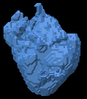Count 1279, 1424 Vertices, 2872 Triangles
Count 306, 923 Vertices, 1814 Triangles
UPENN-GBM-00002_11_automated_approx_segm.nii.gz
Count 155217, 52115 Vertices, 104702 Triangles
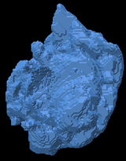Count 29831, 20958 Vertices, 41992 Triangles
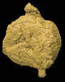Count 15622, 13721 Vertices, 27238 Triangles
UPENN-GBM-00003_11_automated_approx_segm.nii.gz
Count 48423, 21251 Vertices, 42694 Triangles
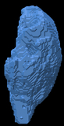Count 6558, 10116 Vertices, 20480 Triangles

Count 12669, 5796 Vertices, 11304 Triangles
UPENN-GBM-00004_11_automated_approx_segm.nii.gz
Count 32718, 22937 Vertices, 46158 Triangles
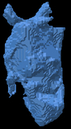Count 4853, 6083 Vertices, 12250 Triangles
Count 18526, 13651 Vertices, 27826 Triangles
UPENN-GBM-00005_11_automated_approx_segm.nii.gz
Count 67378, 28118 Vertices, 56348 Triangles
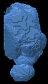Count 17112, 11136 Vertices, 22304 Triangles
Count 4537, 7885 Vertices, 15410 Triangles
UPENN-GBM-00006_11_automated_approx_segm.nii.gz
Count 53448, 22557 Vertices, 45330 Triangles
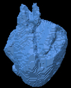Count 6659, 8228 Vertices, 16444 Triangles
Count 9315, 4556 Vertices, 8836 Triangles
UPENN-GBM-00007_11_automated_approx_segm.nii.gz
Count 67397, 26423 Vertices, 53326 Triangles
Count 39103, 16853 Vertices, 33762 Triangles
Count 6645, 9121 Vertices, 17458 Triangles
UPENN-GBM-00008_11_automated_approx_segm.nii.gz
Count 26074, 13133 Vertices, 26582 Triangles
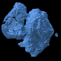Count 3219, 2584 Vertices, 5160 Triangles
Count 509, 856 Vertices, 1640 Triangles
UPENN-GBM-00009_11_automated_approx_segm.nii.gz
Count 102070, 45861 Vertices, 92446 Triangles
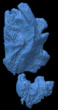Count 19378, 7649 Vertices, 15266 Triangles
Count 775, 3236 Vertices, 5808 Triangles
UPENN-GBM-00010_11_automated_approx_segm.nii.gz
Count 25124, 18542 Vertices, 37396 Triangles
Count 7166, 4957 Vertices, 9914 Triangles
Count 2357, 3079 Vertices, 6002 Triangles
UPENN-GBM-00011_11_automated_approx_segm.nii.gz
Count 79314, 26455 Vertices, 53178 Triangles
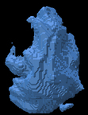Count 16213, 11949 Vertices, 23898 Triangles
Count 8519, 10326 Vertices, 20468 Triangles
UPENN-GBM-00012_11_automated_approx_segm.nii.gz
Count 83580, 38087 Vertices, 77250 Triangles
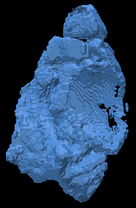Count 16312, 21981 Vertices, 44470 Triangles
Count 28522, 20212 Vertices, 40832 Triangles
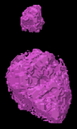UPENN-GBM-00013_11_automated_approx_segm.nii.gz
Count 3835, 5719 Vertices, 11566 Triangles
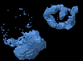Count 12071, 9839 Vertices, 19702 Triangles
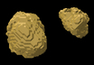Count 2339, 4771 Vertices, 9454 Triangles
UPENN-GBM-00014_11_automated_approx_segm.nii.gz
Count 89867, 36593 Vertices, 73478 Triangles
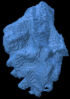Count 29601, 21908 Vertices, 44060 Triangles

Count 12735, 18808 Vertices, 37448 Triangles
UPENN-GBM-00015_11_automated_approx_segm.nii.gz
Count 89827, 49557 Vertices, 99358 Triangles
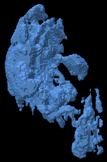Count 1249, 1020 Vertices, 2032 Triangles
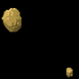Count 27, 146 Vertices, 252 Triangles
UPENN-GBM-00016_11_automated_approx_segm.nii.gz
Count 30137, 16028 Vertices, 32584 Triangles
Count 6221, 5624 Vertices, 11240 Triangles
Count 3090, 2309 Vertices, 4534 Triangles
UPENN-GBM-00017_11_automated_approx_segm.nii.gz
Count 35425, 11959 Vertices, 23930 Triangles
Count 1027, 984 Vertices, 1956 Triangles
Count 99, 328 Vertices, 552 Triangles
UPENN-GBM-00018_11_automated_approx_segm.nii.gz
Count 102867, 52743 Vertices, 106206 Triangles
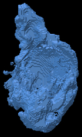Count 45109, 29491 Vertices, 59302 Triangles
Count 28297, 29468 Vertices, 60216 Triangles
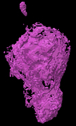UPENN-GBM-00019_11_automated_approx_segm.nii.gz
Count 42875, 15085 Vertices, 30258 Triangles
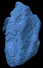Count 9685, 6232 Vertices, 12464 Triangles
Count 1673, 4782 Vertices, 9336 Triangles
UPENN-GBM-00020_11_automated_approx_segm.nii.gz
Count 19252, 10409 Vertices, 20890 Triangles
Count 8527, 6665 Vertices, 13342 Triangles
Count 3848, 3521 Vertices, 6606 Triangles
UPENN-GBM-00021_11_automated_approx_segm.nii.gz
Count 37804, 23322 Vertices, 47060 Triangles
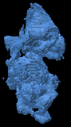Count 6315, 3480 Vertices, 6948 Triangles
Count 532, 1470 Vertices, 2592 Triangles

UPENN-GBM-00056_11_automated_approx_segm.nii.gz
Count 87457, 28334 Vertices, 56920 Triangles
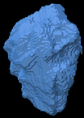Count 12650, 10205 Vertices, 20462 Triangles
Count 5932, 7953 Vertices, 15490 Triangles
UPENN-GBM-00057_11_automated_approx_segm.nii.gz
Count 42304, 31281 Vertices, 63382 Triangles
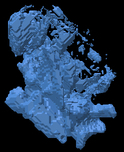Count 33514, 30998 Vertices, 62696 Triangles
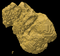Count 21221, 22432 Vertices, 45392 Triangles
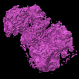UPENN-GBM-00058_11_automated_approx_segm.nii.gz
Count 21123, 32910 Vertices, 69724 Triangles
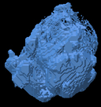Count 11469, 23019 Vertices, 46858 Triangles
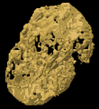Count 65051, 27595 Vertices, 56342 Triangles
UPENN-GBM-00059_11_automated_approx_segm.nii.gz
Count 106420, 41759 Vertices, 83750 Triangles
Count 20680, 12363 Vertices, 24790 Triangles
Count 13641, 18553 Vertices, 38202 Triangles
UPENN-GBM-00060_11_automated_approx_segm.nii.gz
Count 91398, 33234 Vertices, 66640 Triangles
Count 8479, 8431 Vertices, 16846 Triangles
Count 5242, 8158 Vertices, 16228 Triangles
UPENN-GBM-00061_11_automated_approx_segm.nii.gz
Count 40719, 13736 Vertices, 27500 Triangles
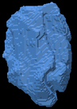Count 1060, 1278 Vertices, 2540 Triangles
Count 126, 396 Vertices, 704 Triangles
UPENN-GBM-00062_11_automated_approx_segm.nii.gz
Count 57595, 23487 Vertices, 47038 Triangles
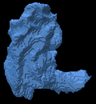Count 3274, 4105 Vertices, 8230 Triangles
Count 1553, 1196 Vertices, 2340 Triangles
UPENN-GBM-00063_11_automated_approx_segm.nii.gz
Count 100173, 43988 Vertices, 88320 Triangles
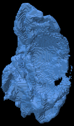Count 28965, 24717 Vertices, 49602 Triangles
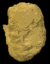Count 30425, 15334 Vertices, 30424 Triangles
UPENN-GBM-00064_11_automated_approx_segm.nii.gz
Count 36591, 26628 Vertices, 53952 Triangles
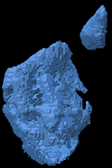Count 16684, 17069 Vertices, 34154 Triangles
Count 23171, 10783 Vertices, 21094 Triangles
UPENN-GBM-00065_11_automated_approx_segm.nii.gz
Count 157069, 64059 Vertices, 128458 Triangles
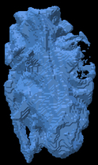Count 37117, 18906 Vertices, 37780 Triangles
Count 10010, 14945 Vertices, 29486 Triangles

UPENN-GBM-00066_11_automated_approx_segm.nii.gz
Count 50034, 24772 Vertices, 49716 Triangles
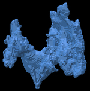Count 2018, 2172 Vertices, 4332 Triangles
Count 231, 378 Vertices, 728 Triangles
UPENN-GBM-00067_11_automated_approx_segm.nii.gz
Count 19841, 17887 Vertices, 36322 Triangles
Count 16615, 16067 Vertices, 32234 Triangles
Count 10213, 8850 Vertices, 17568 Triangles
UPENN-GBM-00068_11_automated_approx_segm.nii.gz
Count 129218, 49841 Vertices, 100598 Triangles
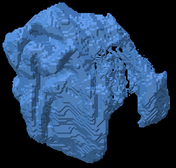Count 42025, 24109 Vertices, 48306 Triangles
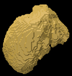Count 19330, 17032 Vertices, 32668 Triangles
UPENN-GBM-00069_11_automated_approx_segm.nii.gz
Count 110026, 40354 Vertices, 80968 Triangles
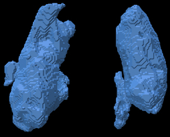Count 17921, 5903 Vertices, 11782 Triangles
Count 856, 3833 Vertices, 7282 Triangles
UPENN-GBM-00070_11_automated_approx_segm.nii.gz
Count 7218, 6783 Vertices, 13766 Triangles

Count 5034, 3429 Vertices, 6854 Triangles
Count 776, 1013 Vertices, 1978 Triangles
UPENN-GBM-00071_11_automated_approx_segm.nii.gz
Count 36933, 27981 Vertices, 56054 Triangles
Count 34484, 38644 Vertices, 78012 Triangles
Count 63960, 25448 Vertices, 50492 Triangles
UPENN-GBM-00072_11_automated_approx_segm.nii.gz
Count 41467, 25936 Vertices, 52588 Triangles
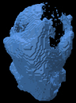Count 41053, 22437 Vertices, 44966 Triangles
Count 14949, 18363 Vertices, 36418 Triangles
UPENN-GBM-00045_11_automated_approx_segm.nii.gz
Count 36509, 26853 Vertices, 54210 Triangles
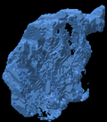Count 32625, 19929 Vertices, 39966 Triangles
Count 10131, 10628 Vertices, 20548 Triangles
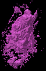UPENN-GBM-00046_11_automated_approx_segm.nii.gz
Count 71558, 44125 Vertices, 89238 Triangles
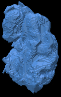Count 35446, 27163 Vertices, 54458 Triangles
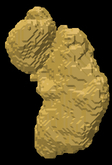Count 19469, 22917 Vertices, 44818 Triangles
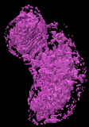UPENN-GBM-00047_11_automated_approx_segm.nii.gz
Count 4184, 7111 Vertices, 14570 Triangles
Count 7921, 4633 Vertices, 9274 Triangles
Count 1060, 2481 Vertices, 4714 Triangles
UPENN-GBM-00048_11_automated_approx_segm.nii.gz
Count 114604, 38258 Vertices, 76640 Triangles
Count 34446, 16897 Vertices, 33926 Triangles
Count 5747, 10111 Vertices, 19666 Triangles
UPENN-GBM-00049_11_automated_approx_segm.nii.gz
Count 24611, 19648 Vertices, 39680 Triangles
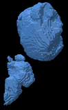Count 13891, 10767 Vertices, 21586 Triangles

Count 6865, 4800 Vertices, 9500 Triangles
UPENN-GBM-00050_11_automated_approx_segm.nii.gz
Count 9815, 8591 Vertices, 17370 Triangles
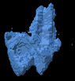Count 3562, 2660 Vertices, 5316 Triangles
Count 461, 1222 Vertices, 2316 Triangles
UPENN-GBM-00051_11_automated_approx_segm.nii.gz
Count 20178, 13469 Vertices, 27078 Triangles
Count 8043, 8211 Vertices, 16414 Triangles
Count 6847, 3792 Vertices, 7452 Triangles
UPENN-GBM-00052_11_automated_approx_segm.nii.gz
Count 75007, 36211 Vertices, 73030 Triangles
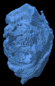Count 23860, 20091 Vertices, 40330 Triangles
Count 36014, 21607 Vertices, 43654 Triangles
UPENN-GBM-00053_11_automated_approx_segm.nii.gz
Count 115633, 51072 Vertices, 102740 Triangles
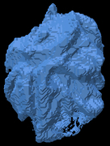Count 31835, 31686 Vertices, 63544 Triangles
Count 57078, 20568 Vertices, 40216 Triangles
UPENN-GBM-00054_11_automated_approx_segm.nii.gz
Count 120214, 43539 Vertices, 87526 Triangles
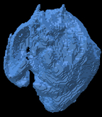Count 40892, 20352 Vertices, 40736 Triangles
Count 15570, 14552 Vertices, 27640 Triangles
UPENN-GBM-00022_11_automated_approx_segm.nii.gz
Count 114924, 46419 Vertices, 93358 Triangles

Count 26553, 31132 Vertices, 63180 Triangles

Count 35324, 30040 Vertices, 60736 Triangles
UPENN-GBM-00033_11_automated_approx_segm.nii.gz
Count 29495, 18467 Vertices, 37222 Triangles
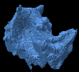Count 4171, 7659 Vertices, 15650 Triangles
Count 9696, 5983 Vertices, 12030 Triangles
UPENN-GBM-00044_11_automated_approx_segm.nii.gz
Count 177510, 59735 Vertices, 119782 Triangles
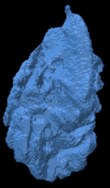Count 27373, 16313 Vertices, 32674 Triangles
Count 10745, 13716 Vertices, 27464 Triangles
UPENN-GBM-00055_11_automated_approx_segm.nii.gz
Count 40504, 22682 Vertices, 45720 Triangles
Count 16298, 10197 Vertices, 20374 Triangles
Count 6007, 5018 Vertices, 9428 Triangles
UPENN-GBM-00073_11_automated_approx_segm.nii.gz
Count 20036, 15241 Vertices, 30854 Triangles
Count 12410, 11543 Vertices, 23250 Triangles
Count 7464, 11843 Vertices, 24302 Triangles
UPENN-GBM-00088_11_automated_approx_segm.nii.gz
Count 70948, 37367 Vertices, 74958 Triangles
Count 20113, 13110 Vertices, 26236 Triangles

Count 5519, 8567 Vertices, 16394 Triangles
UPENN-GBM-00103_11_automated_approx_segm.nii.gz
Count 38070, 22898 Vertices, 46076 Triangles
Count 15897, 16791 Vertices, 33790 Triangles
Count 9442, 9641 Vertices, 19174 Triangles
UPENN-GBM-00114_11_automated_approx_segm.nii.gz
Count 49680, 24279 Vertices, 48834 Triangles
Count 22417, 20115 Vertices, 40402 Triangles
Count 20385, 11686 Vertices, 23000 Triangles
UPENN-GBM-00129_11_automated_approx_segm.nii.gz
Count 70750, 38345 Vertices, 77530 Triangles
Count 33931, 30266 Vertices, 60680 Triangles
Count 46171, 17806 Vertices, 35344 Triangles
UPENN-GBM-00150_11_automated_approx_segm.nii.gz
Count 15534, 8061 Vertices, 16194 Triangles
Count 3104, 2832 Vertices, 5656 Triangles
Count 1197, 1346 Vertices, 2476 Triangles
UPENN-GBM-00162_11_automated_approx_segm.nii.gz
Count 38593, 24590 Vertices, 49624 Triangles
Count 13476, 11119 Vertices, 22334 Triangles

Count 8219, 5912 Vertices, 11844 Triangles
UPENN-GBM-00178_11_automated_approx_segm.nii.gz
Count 6171, 9334 Vertices, 18440 Triangles
Count 15930, 19643 Vertices, 39686 Triangles
Count 19840, 14496 Vertices, 29152 Triangles

UPENN-GBM-00130_11_automated_approx_segm.nii.gz
Count 57588, 44173 Vertices, 89066 Triangles
Count 6290, 7155 Vertices, 14222 Triangles
Count 88224, 19418 Vertices, 39100 Triangles
UPENN-GBM-00131_11_automated_approx_segm.nii.gz
Count 37164, 17572 Vertices, 35392 Triangles
Count 6093, 7248 Vertices, 14508 Triangles
Count 4906, 4281 Vertices, 8694 Triangles
UPENN-GBM-00132_11_automated_approx_segm.nii.gz
Count 26965, 18300 Vertices, 36956 Triangles
Count 13088, 15646 Vertices, 31576 Triangles
Count 14448, 10488 Vertices, 20836 Triangles
UPENN-GBM-00133_11_automated_approx_segm.nii.gz
Count 17805, 10062 Vertices, 20164 Triangles
Count 610, 960 Vertices, 1940 Triangles
Count 147, 382 Vertices, 732 Triangles
UPENN-GBM-00134_11_automated_approx_segm.nii.gz
Count 27132, 16897 Vertices, 34230 Triangles
Count 2583, 4525 Vertices, 9178 Triangles
Count 3965, 4175 Vertices, 8610 Triangles
UPENN-GBM-00135_11_automated_approx_segm.nii.gz
Count 16350, 12454 Vertices, 25036 Triangles
Count 1478, 1448 Vertices, 2884 Triangles
Count 135, 580 Vertices, 1196 Triangles
UPENN-GBM-00136_11_automated_approx_segm.nii.gz
Count 38886, 29419 Vertices, 59374 Triangles
Count 43880, 28337 Vertices, 57030 Triangles
Count 14849, 18060 Vertices, 35288 Triangles
UPENN-GBM-00137_11_automated_approx_segm.nii.gz
Count 21004, 11905 Vertices, 23918 Triangles

Count 1200, 1444 Vertices, 2872 Triangles
Count 114, 382 Vertices, 724 Triangles
UPENN-GBM-00138_11_automated_approx_segm.nii.gz
Count 67065, 29636 Vertices, 59564 Triangles
Count 23718, 13959 Vertices, 28006 Triangles
Count 7123, 8720 Vertices, 17000 Triangles
UPENN-GBM-00139_11_automated_approx_segm.nii.gz
Count 58997, 39201 Vertices, 78766 Triangles
Count 35362, 30540 Vertices, 61388 Triangles
Count 28063, 25039 Vertices, 49078 Triangles

UPENN-GBM-00140_11_automated_approx_segm.nii.gz
Count 15967, 12292 Vertices, 24844 Triangles
Count 1759, 2785 Vertices, 5666 Triangles
Count 1550, 1624 Vertices, 3248 Triangles
UPENN-GBM-00141_11_automated_approx_segm.nii.gz
Count 73227, 23912 Vertices, 47864 Triangles
Count 7057, 3614 Vertices, 7220 Triangles
Count 584, 2089 Vertices, 3778 Triangles
UPENN-GBM-00142_11_automated_approx_segm.nii.gz
Count 47782, 35328 Vertices, 71332 Triangles
Count 42879, 30762 Vertices, 61780 Triangles
Count 23384, 22197 Vertices, 43806 Triangles
UPENN-GBM-00143_11_automated_approx_segm.nii.gz
Count 15578, 15690 Vertices, 31080 Triangles
Count 37188, 33833 Vertices, 68010 Triangles
Count 30979, 22120 Vertices, 44368 Triangles
UPENN-GBM-00144_11_automated_approx_segm.nii.gz
Count 108196, 43295 Vertices, 86874 Triangles
Count 12873, 9230 Vertices, 18500 Triangles
Count 3801, 4101 Vertices, 8118 Triangles
UPENN-GBM-00145_11_automated_approx_segm.nii.gz
Count 31599, 29173 Vertices, 59522 Triangles
Count 26395, 24349 Vertices, 48850 Triangles
Count 29647, 12133 Vertices, 24142 Triangles
UPENN-GBM-00146_11_automated_approx_segm.nii.gz
Count 19189, 8430 Vertices, 16880 Triangles
Count 947, 1073 Vertices, 2138 Triangles
Count 219, 393 Vertices, 742 Triangles
UPENN-GBM-00147_11_automated_approx_segm.nii.gz
Count 33520, 18774 Vertices, 37892 Triangles
Count 11417, 9960 Vertices, 20064 Triangles
Count 5302, 5226 Vertices, 10464 Triangles
UPENN-GBM-00148_11_automated_approx_segm.nii.gz
Count 132181, 38961 Vertices, 78078 Triangles
Count 9257, 8771 Vertices, 17554 Triangles
Count 8448, 8877 Vertices, 17978 Triangles
UPENN-GBM-00149_11_automated_approx_segm.nii.gz
Count 38310, 27405 Vertices, 55366 Triangles
Count 31604, 19255 Vertices, 38658 Triangles
Count 6932, 9399 Vertices, 18578 Triangles
UPENN-GBM-00288_11_automated_approx_segm.nii.gz
Count 8948, 10227 Vertices, 20626 Triangles
Count 5125, 5383 Vertices, 10806 Triangles
Count 2182, 4107 Vertices, 8166 Triangles
UPENN-GBM-00289_11_automated_approx_segm.nii.gz
Count 116757, 36452 Vertices, 72944 Triangles
Count 22572, 11614 Vertices, 23180 Triangles
Count 4001, 6263 Vertices, 11798 Triangles
UPENN-GBM-00290_11_automated_approx_segm.nii.gz
Count 9885, 9225 Vertices, 18886 Triangles
Count 8124, 4138 Vertices, 8236 Triangles
Count 297, 1208 Vertices, 2108 Triangles
UPENN-GBM-00291_11_automated_approx_segm.nii.gz
Count 28898, 24254 Vertices, 49316 Triangles
Count 28665, 17065 Vertices, 34126 Triangles
Count 8545, 8250 Vertices, 15524 Triangles
UPENN-GBM-00292_11_automated_approx_segm.nii.gz
Count 73210, 35812 Vertices, 72580 Triangles
Count 19015, 12729 Vertices, 25530 Triangles

Count 3535, 7754 Vertices, 15004 Triangles

UPENN-GBM-00293_11_automated_approx_segm.nii.gz
Count 64727, 29393 Vertices, 58934 Triangles
Count 11728, 10468 Vertices, 21036 Triangles
Count 4626, 4560 Vertices, 9180 Triangles
UPENN-GBM-00294_11_automated_approx_segm.nii.gz
Count 69325, 34851 Vertices, 69954 Triangles
Count 22594, 12750 Vertices, 25516 Triangles
Count 5962, 7134 Vertices, 13864 Triangles
UPENN-GBM-00295_11_automated_approx_segm.nii.gz
Count 58914, 25065 Vertices, 50298 Triangles
Count 1174, 1451 Vertices, 2910 Triangles
Count 491, 1283 Vertices, 2438 Triangles
UPENN-GBM-00296_11_automated_approx_segm.nii.gz
Count 54457, 29833 Vertices, 59998 Triangles
Count 18077, 16000 Vertices, 32236 Triangles
Count 7614, 9432 Vertices, 18572 Triangles

UPENN-GBM-00297_11_automated_approx_segm.nii.gz
Count 99353, 41819 Vertices, 84694 Triangles
Count 58425, 30115 Vertices, 60278 Triangles
Count 22053, 24118 Vertices, 47744 Triangles

UPENN-GBM-00298_11_automated_approx_segm.nii.gz
Count 15485, 10187 Vertices, 20490 Triangles
Count 5136, 4540 Vertices, 9116 Triangles
Count 1653, 1645 Vertices, 3278 Triangles
UPENN-GBM-00299_11_automated_approx_segm.nii.gz
Count 89125, 24205 Vertices, 48378 Triangles
Count 1095, 2255 Vertices, 4478 Triangles
Count 675, 1555 Vertices, 3094 Triangles
UPENN-GBM-00300_11_automated_approx_segm.nii.gz
Count 21584, 30504 Vertices, 60964 Triangles

Count 64867, 42499 Vertices, 85702 Triangles
Count 17532, 29599 Vertices, 58926 Triangles
UPENN-GBM-00301_11_automated_approx_segm.nii.gz
Count 103046, 33714 Vertices, 67460 Triangles
Count 10990, 11181 Vertices, 22382 Triangles
Count 11612, 5920 Vertices, 11364 Triangles
UPENN-GBM-00302_11_automated_approx_segm.nii.gz
Count 37321, 23753 Vertices, 47906 Triangles
Count 12438, 14837 Vertices, 29714 Triangles
Count 22360, 7840 Vertices, 15320 Triangles
UPENN-GBM-00303_11_automated_approx_segm.nii.gz
Count 146287, 48500 Vertices, 97168 Triangles
Count 10644, 12159 Vertices, 24426 Triangles
Count 7816, 11408 Vertices, 22848 Triangles
UPENN-GBM-00192_11_automated_approx_segm.nii.gz
Count 10503, 6330 Vertices, 12712 Triangles
Count 2109, 2531 Vertices, 5070 Triangles
Count 725, 1453 Vertices, 2862 Triangles
UPENN-GBM-00193_11_automated_approx_segm.nii.gz
Count 22678, 24069 Vertices, 48510 Triangles
Count 32806, 33458 Vertices, 67376 Triangles
Count 40706, 24738 Vertices, 50080 Triangles
UPENN-GBM-00194_11_automated_approx_segm.nii.gz
Count 30847, 24681 Vertices, 50082 Triangles
Count 19841, 22004 Vertices, 44036 Triangles
Count 22752, 12775 Vertices, 25386 Triangles
UPENN-GBM-00195_11_automated_approx_segm.nii.gz
Count 122720, 39868 Vertices, 79984 Triangles
Count 14789, 8813 Vertices, 17638 Triangles
Count 2429, 5993 Vertices, 11474 Triangles

UPENN-GBM-00196_11_automated_approx_segm.nii.gz
Count 18676, 14190 Vertices, 28276 Triangles
Count 38663, 31402 Vertices, 63044 Triangles
Count 23764, 17872 Vertices, 35852 Triangles
UPENN-GBM-00197_11_automated_approx_segm.nii.gz
Count 108946, 31901 Vertices, 63922 Triangles
Count 24948, 18098 Vertices, 36308 Triangles

Count 11381, 17516 Vertices, 35388 Triangles
UPENN-GBM-00198_11_automated_approx_segm.nii.gz
Count 36234, 17921 Vertices, 35994 Triangles
Count 3576, 4786 Vertices, 9580 Triangles
Count 3204, 5457 Vertices, 11242 Triangles
UPENN-GBM-00199_11_automated_approx_segm.nii.gz
Count 69074, 33574 Vertices, 67508 Triangles
Count 48464, 26788 Vertices, 53656 Triangles
Count 18509, 16401 Vertices, 32318 Triangles
UPENN-GBM-00200_11_automated_approx_segm.nii.gz
Count 65751, 31031 Vertices, 62326 Triangles
Count 4955, 5218 Vertices, 10440 Triangles
Count 1633, 1674 Vertices, 3288 Triangles
UPENN-GBM-00201_11_automated_approx_segm.nii.gz
Count 6669, 6650 Vertices, 13416 Triangles
Count 1276, 1068 Vertices, 2132 Triangles
Count 0, 0 Vertices, 0 Triangles

UPENN-GBM-00202_11_automated_approx_segm.nii.gz
Count 19836, 16445 Vertices, 34090 Triangles
Count 17321, 12708 Vertices, 25520 Triangles

Count 8728, 6187 Vertices, 12354 Triangles
UPENN-GBM-00203_11_automated_approx_segm.nii.gz
Count 70332, 55651 Vertices, 112722 Triangles
Count 19109, 28471 Vertices, 57582 Triangles
Count 44068, 22912 Vertices, 46224 Triangles
UPENN-GBM-00204_11_automated_approx_segm.nii.gz
Count 87491, 36193 Vertices, 72566 Triangles
Count 8248, 9772 Vertices, 19732 Triangles
Count 4417, 7611 Vertices, 15086 Triangles
UPENN-GBM-00205_11_automated_approx_segm.nii.gz
Count 59426, 32154 Vertices, 64396 Triangles
Count 32977, 29788 Vertices, 59956 Triangles
Count 44535, 19519 Vertices, 39006 Triangles
UPENN-GBM-00206_11_automated_approx_segm.nii.gz
Count 24763, 10578 Vertices, 21184 Triangles
Count 3306, 2720 Vertices, 5436 Triangles
Count 905, 1643 Vertices, 3022 Triangles
UPENN-GBM-00207_11_automated_approx_segm.nii.gz
Count 36222, 34553 Vertices, 70490 Triangles
Count 38258, 33792 Vertices, 67980 Triangles
Count 37825, 21860 Vertices, 43872 Triangles
UPENN-GBM-00208_11_automated_approx_segm.nii.gz
Count 44557, 23766 Vertices, 47744 Triangles
Count 9430, 10155 Vertices, 20310 Triangles
Count 6152, 4791 Vertices, 9406 Triangles
UPENN-GBM-00209_11_automated_approx_segm.nii.gz
Count 71784, 36682 Vertices, 73736 Triangles
Count 31091, 21968 Vertices, 43964 Triangles
Count 21495, 12317 Vertices, 24222 Triangles
UPENN-GBM-00210_11_automated_approx_segm.nii.gz
Count 91190, 33240 Vertices, 66636 Triangles
Count 25005, 12239 Vertices, 24474 Triangles
Count 5248, 6444 Vertices, 12548 Triangles
UPENN-GBM-00211_11_automated_approx_segm.nii.gz
Count 81437, 37911 Vertices, 76426 Triangles
Count 13263, 12379 Vertices, 24806 Triangles
Count 10582, 8150 Vertices, 15912 Triangles
UPENN-GBM-00034_11_automated_approx_segm.nii.gz
Count 14008, 12933 Vertices, 26310 Triangles
Count 11127, 12391 Vertices, 24962 Triangles
Count 9682, 9509 Vertices, 19186 Triangles
UPENN-GBM-00035_11_automated_approx_segm.nii.gz
Count 102202, 35744 Vertices, 72296 Triangles
Count 13773, 12154 Vertices, 24316 Triangles
Count 14265, 5438 Vertices, 10648 Triangles
UPENN-GBM-00036_11_automated_approx_segm.nii.gz
Count 124587, 44505 Vertices, 89498 Triangles
Count 21361, 19501 Vertices, 39138 Triangles
Count 20781, 14612 Vertices, 29252 Triangles
UPENN-GBM-00037_11_automated_approx_segm.nii.gz
Count 53086, 22187 Vertices, 44638 Triangles
Count 8335, 9071 Vertices, 18182 Triangles
Count 7836, 4432 Vertices, 8864 Triangles
UPENN-GBM-00038_11_automated_approx_segm.nii.gz
Count 120537, 49253 Vertices, 98946 Triangles
Count 29540, 20948 Vertices, 41948 Triangles
Count 12694, 15237 Vertices, 29894 Triangles
UPENN-GBM-00039_11_automated_approx_segm.nii.gz
Count 79396, 23951 Vertices, 48022 Triangles
Count 8633, 8934 Vertices, 18108 Triangles
Count 4559, 7714 Vertices, 15444 Triangles
UPENN-GBM-00040_11_automated_approx_segm.nii.gz
Count 56598, 29689 Vertices, 59978 Triangles
Count 21216, 17268 Vertices, 34576 Triangles
Count 7347, 12789 Vertices, 25094 Triangles
UPENN-GBM-00041_11_automated_approx_segm.nii.gz
Count 59156, 34157 Vertices, 68506 Triangles
Count 29761, 24216 Vertices, 48492 Triangles
Count 23690, 13096 Vertices, 26124 Triangles
UPENN-GBM-00042_11_automated_approx_segm.nii.gz
Count 28345, 19601 Vertices, 39138 Triangles
Count 42275, 34664 Vertices, 69636 Triangles
Count 30460, 23256 Vertices, 46188 Triangles
UPENN-GBM-00043_11_automated_approx_segm.nii.gz
Count 112088, 33627 Vertices, 67370 Triangles
Count 9393, 7420 Vertices, 14876 Triangles
Count 4029, 9434 Vertices, 19432 Triangles
UPENN-GBM-00442_11_automated_approx_segm.nii.gz
Count 45803, 23368 Vertices, 46968 Triangles
Count 5853, 3767 Vertices, 7522 Triangles
Count 580, 1215 Vertices, 2198 Triangles
UPENN-GBM-00443_11_automated_approx_segm.nii.gz
Count 46751, 31413 Vertices, 63450 Triangles
Count 15456, 13029 Vertices, 26114 Triangles
Count 8541, 10123 Vertices, 20126 Triangles
UPENN-GBM-00444_11_automated_approx_segm.nii.gz
Count 9593, 13357 Vertices, 27058 Triangles
Count 0, 0 Vertices, 0 Triangles

Count 20879, 5552 Vertices, 11100 Triangles
UPENN-GBM-00445_11_automated_approx_segm.nii.gz
Count 70939, 30922 Vertices, 61940 Triangles
Count 25511, 11687 Vertices, 23306 Triangles
Count 2829, 8310 Vertices, 15628 Triangles
UPENN-GBM-00446_11_automated_approx_segm.nii.gz
Count 12949, 12714 Vertices, 25892 Triangles
Count 8767, 9509 Vertices, 19098 Triangles
Count 5099, 4755 Vertices, 9270 Triangles

UPENN-GBM-00447_11_automated_approx_segm.nii.gz
Count 64957, 39473 Vertices, 79338 Triangles
Count 30224, 25289 Vertices, 50702 Triangles
Count 33092, 14255 Vertices, 28122 Triangles
UPENN-GBM-00448_11_automated_approx_segm.nii.gz
Count 50670, 24200 Vertices, 48712 Triangles
Count 10425, 8975 Vertices, 17982 Triangles

Count 4256, 5394 Vertices, 10552 Triangles
UPENN-GBM-00449_11_automated_approx_segm.nii.gz
Count 33191, 15124 Vertices, 30348 Triangles
Count 3642, 3978 Vertices, 7980 Triangles
Count 1511, 2853 Vertices, 5542 Triangles
UPENN-GBM-00450_11_automated_approx_segm.nii.gz
Count 52420, 21059 Vertices, 42326 Triangles
Count 8500, 5737 Vertices, 11534 Triangles
Count 1373, 3505 Vertices, 6830 Triangles
UPENN-GBM-00451_11_automated_approx_segm.nii.gz
Count 11479, 7102 Vertices, 14200 Triangles
Count 1503, 1654 Vertices, 3300 Triangles
Count 487, 524 Vertices, 1016 Triangles
UPENN-GBM-00452_11_automated_approx_segm.nii.gz
Count 14564, 10943 Vertices, 22150 Triangles
Count 11429, 5338 Vertices, 10668 Triangles

Count 1655, 1224 Vertices, 2420 Triangles
UPENN-GBM-00453_11_automated_approx_segm.nii.gz
Count 78294, 39499 Vertices, 79438 Triangles
Count 29584, 18841 Vertices, 37742 Triangles
Count 8210, 12173 Vertices, 23726 Triangles
UPENN-GBM-00454_11_automated_approx_segm.nii.gz
Count 22549, 19300 Vertices, 38968 Triangles
Count 22026, 18234 Vertices, 36528 Triangles
Count 18113, 9252 Vertices, 18380 Triangles
UPENN-GBM-00455_11_automated_approx_segm.nii.gz
Count 84702, 34150 Vertices, 68620 Triangles
Count 31586, 17886 Vertices, 35860 Triangles
Count 9067, 11802 Vertices, 22556 Triangles

UPENN-GBM-00456_11_automated_approx_segm.nii.gz
Count 56210, 21731 Vertices, 43738 Triangles
Count 3895, 3866 Vertices, 7700 Triangles
Count 372, 1490 Vertices, 2788 Triangles
UPENN-GBM-00457_11_automated_approx_segm.nii.gz
Count 77994, 26177 Vertices, 52522 Triangles
Count 5914, 3448 Vertices, 6884 Triangles
Count 512, 1774 Vertices, 3328 Triangles
UPENN-GBM-00241_11_automated_approx_segm.nii.gz
Count 20475, 14494 Vertices, 29400 Triangles
Count 7841, 6909 Vertices, 13826 Triangles
Count 3559, 2136 Vertices, 4220 Triangles
UPENN-GBM-00242_11_automated_approx_segm.nii.gz
Count 27851, 21576 Vertices, 44008 Triangles
Count 18105, 20703 Vertices, 41598 Triangles
Count 30174, 13735 Vertices, 27526 Triangles
UPENN-GBM-00243_11_automated_approx_segm.nii.gz
Count 87345, 32844 Vertices, 65912 Triangles
Count 30713, 15924 Vertices, 31880 Triangles
Count 6034, 8602 Vertices, 16404 Triangles
UPENN-GBM-00244_11_automated_approx_segm.nii.gz
Count 14268, 9162 Vertices, 18516 Triangles
Count 3913, 2755 Vertices, 5510 Triangles
Count 193, 774 Vertices, 1284 Triangles
UPENN-GBM-00245_11_automated_approx_segm.nii.gz
Count 16826, 9606 Vertices, 19468 Triangles
Count 3532, 2158 Vertices, 4308 Triangles
Count 246, 663 Vertices, 1182 Triangles
UPENN-GBM-00246_11_automated_approx_segm.nii.gz
Count 58331, 27026 Vertices, 54368 Triangles
Count 8747, 11867 Vertices, 24058 Triangles
Count 10522, 9912 Vertices, 20068 Triangles
UPENN-GBM-00247_11_automated_approx_segm.nii.gz
Count 13204, 15501 Vertices, 31334 Triangles
Count 15580, 15567 Vertices, 31374 Triangles
Count 9588, 10512 Vertices, 21260 Triangles
UPENN-GBM-00248_11_automated_approx_segm.nii.gz
Count 68476, 21983 Vertices, 43998 Triangles
Count 9068, 5259 Vertices, 10518 Triangles
Count 1434, 3187 Vertices, 6182 Triangles
UPENN-GBM-00249_11_automated_approx_segm.nii.gz
Count 153072, 32100 Vertices, 64324 Triangles
Count 10169, 5934 Vertices, 11904 Triangles
Count 5610, 8464 Vertices, 17544 Triangles
UPENN-GBM-00250_11_automated_approx_segm.nii.gz
Count 79796, 35237 Vertices, 70758 Triangles
Count 13374, 10244 Vertices, 20532 Triangles
Count 3421, 5416 Vertices, 9916 Triangles
UPENN-GBM-00251_11_automated_approx_segm.nii.gz
Count 50155, 34863 Vertices, 70002 Triangles
Count 38380, 20668 Vertices, 41492 Triangles
Count 9200, 16093 Vertices, 31774 Triangles

UPENN-GBM-00252_11_automated_approx_segm.nii.gz
Count 27140, 17963 Vertices, 36138 Triangles
Count 9564, 9843 Vertices, 19730 Triangles
Count 7331, 4538 Vertices, 9104 Triangles
UPENN-GBM-00253_11_automated_approx_segm.nii.gz
Count 35751, 24697 Vertices, 50002 Triangles
Count 22773, 22706 Vertices, 45844 Triangles
Count 17005, 18367 Vertices, 37370 Triangles
UPENN-GBM-00254_11_automated_approx_segm.nii.gz
Count 65829, 44421 Vertices, 90314 Triangles
Count 41893, 45076 Vertices, 90660 Triangles
Count 75722, 32435 Vertices, 65478 Triangles
UPENN-GBM-00255_11_automated_approx_segm.nii.gz
Count 4716, 8679 Vertices, 17454 Triangles
Count 18738, 13228 Vertices, 26532 Triangles
Count 5535, 7061 Vertices, 13994 Triangles
UPENN-GBM-00256_11_automated_approx_segm.nii.gz
Count 24002, 14257 Vertices, 28714 Triangles
Count 12558, 11802 Vertices, 23764 Triangles
Count 5154, 10345 Vertices, 20886 Triangles
UPENN-GBM-00257_11_automated_approx_segm.nii.gz
Count 70717, 33137 Vertices, 66726 Triangles
Count 20934, 16926 Vertices, 33952 Triangles

Count 13960, 8793 Vertices, 17602 Triangles
UPENN-GBM-00258_11_automated_approx_segm.nii.gz
Count 16811, 8193 Vertices, 16454 Triangles
Count 1968, 1934 Vertices, 3872 Triangles
Count 430, 1637 Vertices, 3198 Triangles
UPENN-GBM-00259_11_automated_approx_segm.nii.gz
Count 38888, 19261 Vertices, 38834 Triangles
Count 8562, 7248 Vertices, 14524 Triangles
Count 3332, 3657 Vertices, 7214 Triangles
UPENN-GBM-00260_11_automated_approx_segm.nii.gz
Count 21555, 18643 Vertices, 37934 Triangles
Count 19973, 12823 Vertices, 25690 Triangles
Count 5209, 13211 Vertices, 26606 Triangles
UPENN-GBM-00261_11_automated_approx_segm.nii.gz
Count 36257, 20016 Vertices, 40268 Triangles
Count 5530, 4939 Vertices, 9918 Triangles
Count 1572, 3043 Vertices, 5838 Triangles
UPENN-GBM-00023_11_automated_approx_segm.nii.gz
Count 97619, 38518 Vertices, 77508 Triangles

Count 25960, 16281 Vertices, 32614 Triangles
Count 11754, 12397 Vertices, 23914 Triangles
UPENN-GBM-00024_11_automated_approx_segm.nii.gz
Count 54363, 24427 Vertices, 49002 Triangles
Count 3378, 2499 Vertices, 4982 Triangles
Count 586, 2048 Vertices, 3828 Triangles
UPENN-GBM-00025_11_automated_approx_segm.nii.gz
Count 2641, 5846 Vertices, 11988 Triangles
Count 22321, 15927 Vertices, 31874 Triangles
Count 10958, 8200 Vertices, 16332 Triangles
UPENN-GBM-00026_11_automated_approx_segm.nii.gz
Count 41534, 16816 Vertices, 33796 Triangles
Count 8508, 5046 Vertices, 10084 Triangles
Count 1549, 2314 Vertices, 4208 Triangles
UPENN-GBM-00027_11_automated_approx_segm.nii.gz
Count 34672, 20816 Vertices, 41812 Triangles
Count 16998, 13508 Vertices, 27100 Triangles
Count 4856, 8218 Vertices, 15744 Triangles
UPENN-GBM-00028_11_automated_approx_segm.nii.gz
Count 17681, 25438 Vertices, 51856 Triangles
Count 23782, 32121 Vertices, 65146 Triangles
Count 62597, 29041 Vertices, 58906 Triangles
UPENN-GBM-00029_11_automated_approx_segm.nii.gz
Count 61980, 40154 Vertices, 81540 Triangles
Count 47444, 35794 Vertices, 71892 Triangles
Count 50216, 30726 Vertices, 61156 Triangles

UPENN-GBM-00030_11_automated_approx_segm.nii.gz
Count 19532, 12968 Vertices, 26084 Triangles
Count 5750, 5228 Vertices, 10476 Triangles
Count 2319, 3174 Vertices, 5992 Triangles
UPENN-GBM-00031_11_automated_approx_segm.nii.gz
Count 57454, 19521 Vertices, 39086 Triangles
Count 1544, 1796 Vertices, 3604 Triangles
Count 614, 1405 Vertices, 2714 Triangles
UPENN-GBM-00032_11_automated_approx_segm.nii.gz
Count 104346, 46104 Vertices, 92564 Triangles
Count 26729, 23095 Vertices, 46394 Triangles
Count 16876, 19464 Vertices, 38600 Triangles
UPENN-GBM-00115_11_automated_approx_segm.nii.gz
Count 9492, 8178 Vertices, 16632 Triangles
Count 4757, 4188 Vertices, 8432 Triangles
Count 1036, 2099 Vertices, 4166 Triangles
UPENN-GBM-00116_11_automated_approx_segm.nii.gz
Count 28857, 17714 Vertices, 35596 Triangles
Count 10331, 8312 Vertices, 16664 Triangles
Count 3736, 5824 Vertices, 11164 Triangles
UPENN-GBM-00117_11_automated_approx_segm.nii.gz
Count 144855, 42847 Vertices, 85794 Triangles
Count 15865, 16472 Vertices, 33180 Triangles
Count 9768, 11012 Vertices, 21940 Triangles
UPENN-GBM-00118_11_automated_approx_segm.nii.gz
Count 61416, 38577 Vertices, 77710 Triangles
Count 27449, 24545 Vertices, 49470 Triangles
Count 11314, 14620 Vertices, 29116 Triangles
UPENN-GBM-00119_11_automated_approx_segm.nii.gz
Count 37485, 18099 Vertices, 36370 Triangles
Count 13376, 9067 Vertices, 18126 Triangles
Count 5929, 3590 Vertices, 6992 Triangles
UPENN-GBM-00120_11_automated_approx_segm.nii.gz
Count 62245, 34883 Vertices, 70146 Triangles
Count 38744, 25835 Vertices, 51718 Triangles
Count 13778, 16620 Vertices, 32928 Triangles
UPENN-GBM-00121_11_automated_approx_segm.nii.gz
Count 122007, 44865 Vertices, 90386 Triangles
Count 26968, 19467 Vertices, 38966 Triangles
Count 20134, 9921 Vertices, 19538 Triangles
UPENN-GBM-00122_11_automated_approx_segm.nii.gz
Count 69938, 30316 Vertices, 61136 Triangles

Count 18905, 18323 Vertices, 37046 Triangles
Count 15699, 13460 Vertices, 27224 Triangles
UPENN-GBM-00123_11_automated_approx_segm.nii.gz
Count 50947, 20813 Vertices, 41902 Triangles
Count 10368, 13246 Vertices, 26640 Triangles
Count 13404, 10267 Vertices, 21002 Triangles
UPENN-GBM-00124_11_automated_approx_segm.nii.gz
Count 37121, 20170 Vertices, 40324 Triangles
Count 20662, 17453 Vertices, 34934 Triangles
Count 19681, 8702 Vertices, 17272 Triangles
UPENN-GBM-00125_11_automated_approx_segm.nii.gz
Count 67648, 35995 Vertices, 72686 Triangles
Count 11549, 15846 Vertices, 32292 Triangles
Count 13266, 21811 Vertices, 45702 Triangles
UPENN-GBM-00126_11_automated_approx_segm.nii.gz
Count 70206, 32340 Vertices, 64896 Triangles
Count 22012, 15787 Vertices, 31658 Triangles
Count 8333, 7648 Vertices, 15116 Triangles
UPENN-GBM-00127_11_automated_approx_segm.nii.gz
Count 32765, 21773 Vertices, 43850 Triangles
Count 10987, 10939 Vertices, 22022 Triangles
Count 24106, 14424 Vertices, 29608 Triangles
UPENN-GBM-00128_11_automated_approx_segm.nii.gz
Count 24561, 18044 Vertices, 36348 Triangles
Count 31287, 24886 Vertices, 49896 Triangles
Count 22324, 14178 Vertices, 28224 Triangles
UPENN-GBM-00526_11_automated_approx_segm.nii.gz
Count 32238, 30281 Vertices, 61362 Triangles
Count 33633, 17983 Vertices, 36018 Triangles
Count 3554, 9033 Vertices, 17294 Triangles
UPENN-GBM-00527_11_automated_approx_segm.nii.gz
Count 80788, 36766 Vertices, 73608 Triangles
Count 33639, 21790 Vertices, 43676 Triangles
Count 19532, 11123 Vertices, 22210 Triangles
UPENN-GBM-00528_11_automated_approx_segm.nii.gz
Count 19952, 15125 Vertices, 30554 Triangles
Count 12311, 9004 Vertices, 18000 Triangles
Count 2387, 5032 Vertices, 9804 Triangles
UPENN-GBM-00529_11_automated_approx_segm.nii.gz
Count 40872, 31465 Vertices, 63342 Triangles
Count 40360, 25500 Vertices, 51100 Triangles
Count 11144, 16956 Vertices, 33284 Triangles
UPENN-GBM-00530_11_automated_approx_segm.nii.gz
Count 78951, 37334 Vertices, 75464 Triangles

Count 40427, 21074 Vertices, 42228 Triangles
Count 21256, 9354 Vertices, 18664 Triangles
UPENN-GBM-00531_11_automated_approx_segm.nii.gz
Count 123977, 52335 Vertices, 105234 Triangles
Count 26024, 13321 Vertices, 26634 Triangles
Count 5616, 8794 Vertices, 16960 Triangles
UPENN-GBM-00532_11_automated_approx_segm.nii.gz
Count 38954, 20644 Vertices, 41664 Triangles
Count 4855, 2452 Vertices, 4900 Triangles
Count 284, 1169 Vertices, 2378 Triangles
UPENN-GBM-00533_11_automated_approx_segm.nii.gz
Count 41605, 22313 Vertices, 44814 Triangles
Count 17716, 6977 Vertices, 13934 Triangles
Count 1273, 4132 Vertices, 7804 Triangles
UPENN-GBM-00534_11_automated_approx_segm.nii.gz
Count 57740, 36665 Vertices, 74686 Triangles
Count 15669, 11664 Vertices, 23368 Triangles
Count 2969, 7764 Vertices, 14940 Triangles
UPENN-GBM-00535_11_automated_approx_segm.nii.gz
Count 53473, 21296 Vertices, 42720 Triangles
Count 11283, 11701 Vertices, 23446 Triangles
Count 9268, 7086 Vertices, 14088 Triangles
UPENN-GBM-00536_11_automated_approx_segm.nii.gz
Count 32965, 17168 Vertices, 35036 Triangles
Count 7135, 6769 Vertices, 13646 Triangles
Count 4840, 3320 Vertices, 6648 Triangles

UPENN-GBM-00537_11_automated_approx_segm.nii.gz
Count 60976, 32507 Vertices, 65342 Triangles
Count 34440, 16952 Vertices, 33848 Triangles
Count 6997, 7560 Vertices, 14756 Triangles
UPENN-GBM-00538_11_automated_approx_segm.nii.gz
Count 73824, 38108 Vertices, 76436 Triangles
Count 37463, 32523 Vertices, 65230 Triangles
Count 38858, 21816 Vertices, 43464 Triangles
UPENN-GBM-00539_11_automated_approx_segm.nii.gz
Count 68053, 36871 Vertices, 74466 Triangles
Count 21660, 20743 Vertices, 41698 Triangles
Count 7522, 8654 Vertices, 16964 Triangles
UPENN-GBM-00540_11_automated_approx_segm.nii.gz
Count 81980, 35348 Vertices, 71048 Triangles
Count 27128, 13794 Vertices, 27680 Triangles
Count 3932, 8509 Vertices, 16166 Triangles
UPENN-GBM-00541_11_automated_approx_segm.nii.gz
Count 77693, 27109 Vertices, 54250 Triangles
Count 14477, 7728 Vertices, 15420 Triangles
Count 1482, 4202 Vertices, 7768 Triangles
UPENN-GBM-00542_11_automated_approx_segm.nii.gz
Count 31758, 17043 Vertices, 34502 Triangles
Count 11188, 7518 Vertices, 15064 Triangles
Count 3224, 5184 Vertices, 9948 Triangles
UPENN-GBM-00543_11_automated_approx_segm.nii.gz
Count 83203, 32321 Vertices, 64794 Triangles
Count 15127, 14148 Vertices, 28492 Triangles
Count 8917, 7287 Vertices, 14322 Triangles
UPENN-GBM-00544_11_automated_approx_segm.nii.gz
Count 97100, 41745 Vertices, 83870 Triangles
Count 40674, 14305 Vertices, 28598 Triangles
Count 1793, 8379 Vertices, 15626 Triangles
UPENN-GBM-00545_11_automated_approx_segm.nii.gz
Count 89775, 36812 Vertices, 73732 Triangles
Count 13613, 7916 Vertices, 15840 Triangles
Count 1503, 4146 Vertices, 7840 Triangles
UPENN-GBM-00546_11_automated_approx_segm.nii.gz
Count 55360, 34968 Vertices, 70528 Triangles
Count 24762, 27045 Vertices, 54718 Triangles
Count 26120, 23762 Vertices, 48436 Triangles
UPENN-GBM-00224_11_automated_approx_segm.nii.gz
Count 61809, 34198 Vertices, 69252 Triangles
Count 15371, 22069 Vertices, 44534 Triangles
Count 38389, 13423 Vertices, 26418 Triangles
UPENN-GBM-00225_11_automated_approx_segm.nii.gz
Count 127015, 63658 Vertices, 128072 Triangles
Count 45726, 37896 Vertices, 76728 Triangles
Count 60081, 32197 Vertices, 64406 Triangles
UPENN-GBM-00226_11_automated_approx_segm.nii.gz
Count 31189, 19674 Vertices, 39736 Triangles
Count 15179, 16035 Vertices, 32154 Triangles
Count 16129, 10601 Vertices, 21090 Triangles
UPENN-GBM-00227_11_automated_approx_segm.nii.gz
Count 123737, 80018 Vertices, 160316 Triangles
Count 17452, 19489 Vertices, 39282 Triangles

Count 16384, 11744 Vertices, 23452 Triangles
UPENN-GBM-00228_11_automated_approx_segm.nii.gz
Count 21740, 22646 Vertices, 46072 Triangles
Count 15853, 17621 Vertices, 35538 Triangles
Count 19624, 17266 Vertices, 34828 Triangles
UPENN-GBM-00229_11_automated_approx_segm.nii.gz
Count 153939, 55650 Vertices, 111412 Triangles
Count 0, 0 Vertices, 0 Triangles

Count 41898, 11282 Vertices, 22560 Triangles
UPENN-GBM-00230_11_automated_approx_segm.nii.gz
Count 37303, 31985 Vertices, 64846 Triangles
Count 15693, 18391 Vertices, 36890 Triangles
Count 33661, 17780 Vertices, 36128 Triangles
UPENN-GBM-00231_11_automated_approx_segm.nii.gz
Count 130427, 55006 Vertices, 110512 Triangles
Count 38016, 27172 Vertices, 54680 Triangles
Count 13745, 20421 Vertices, 40238 Triangles
UPENN-GBM-00232_11_automated_approx_segm.nii.gz
Count 47290, 29330 Vertices, 58920 Triangles
Count 17759, 18189 Vertices, 36654 Triangles
Count 18408, 10566 Vertices, 21120 Triangles
UPENN-GBM-00233_11_automated_approx_segm.nii.gz
Count 3345, 5675 Vertices, 11798 Triangles
Count 6867, 3800 Vertices, 7596 Triangles
Count 422, 1515 Vertices, 2878 Triangles
UPENN-GBM-00234_11_automated_approx_segm.nii.gz
Count 23799, 21411 Vertices, 43470 Triangles
Count 27219, 19084 Vertices, 38200 Triangles
Count 5492, 9156 Vertices, 17852 Triangles
UPENN-GBM-00235_11_automated_approx_segm.nii.gz
Count 10175, 22401 Vertices, 46230 Triangles
Count 44526, 45257 Vertices, 91574 Triangles

Count 56811, 34844 Vertices, 70628 Triangles
UPENN-GBM-00236_11_automated_approx_segm.nii.gz
Count 87254, 30223 Vertices, 60338 Triangles
Count 16538, 14654 Vertices, 29348 Triangles
Count 15692, 7202 Vertices, 14240 Triangles
UPENN-GBM-00237_11_automated_approx_segm.nii.gz
Count 22601, 17826 Vertices, 36180 Triangles
Count 16501, 12734 Vertices, 25688 Triangles
Count 5143, 8307 Vertices, 16318 Triangles
UPENN-GBM-00238_11_automated_approx_segm.nii.gz
Count 8473, 9297 Vertices, 18718 Triangles
Count 6849, 8361 Vertices, 16906 Triangles
Count 7599, 5444 Vertices, 10900 Triangles
UPENN-GBM-00239_11_automated_approx_segm.nii.gz
Count 58795, 25636 Vertices, 51420 Triangles
Count 18425, 14797 Vertices, 29674 Triangles
Count 12060, 9224 Vertices, 17832 Triangles
UPENN-GBM-00104_11_automated_approx_segm.nii.gz
Count 43535, 33620 Vertices, 67556 Triangles
Count 62224, 49000 Vertices, 98652 Triangles
Count 36068, 34719 Vertices, 69634 Triangles
UPENN-GBM-00105_11_automated_approx_segm.nii.gz
Count 52477, 22170 Vertices, 44528 Triangles
Count 5487, 4596 Vertices, 9204 Triangles
Count 1778, 2945 Vertices, 5446 Triangles
UPENN-GBM-00106_11_automated_approx_segm.nii.gz
Count 5663, 5180 Vertices, 10540 Triangles
Count 3167, 2730 Vertices, 5468 Triangles
Count 609, 1225 Vertices, 2334 Triangles
UPENN-GBM-00107_11_automated_approx_segm.nii.gz
Count 96988, 44358 Vertices, 89496 Triangles
Count 7255, 5126 Vertices, 10224 Triangles
Count 381, 1271 Vertices, 2514 Triangles
UPENN-GBM-00108_11_automated_approx_segm.nii.gz
Count 56610, 33802 Vertices, 68152 Triangles
Count 22031, 16846 Vertices, 33708 Triangles
Count 6021, 8023 Vertices, 15454 Triangles
UPENN-GBM-00109_11_automated_approx_segm.nii.gz
Count 124488, 45587 Vertices, 91914 Triangles
Count 28831, 15956 Vertices, 31992 Triangles
Count 6593, 11934 Vertices, 22996 Triangles
UPENN-GBM-00110_11_automated_approx_segm.nii.gz
Count 115853, 47049 Vertices, 94330 Triangles
Count 20678, 16861 Vertices, 33838 Triangles
Count 7696, 10621 Vertices, 21074 Triangles
UPENN-GBM-00111_11_automated_approx_segm.nii.gz
Count 95920, 43632 Vertices, 87928 Triangles
Count 35729, 33580 Vertices, 67624 Triangles
Count 22072, 32776 Vertices, 66476 Triangles
UPENN-GBM-00112_11_automated_approx_segm.nii.gz
Count 10263, 11522 Vertices, 23516 Triangles
Count 10520, 10793 Vertices, 21838 Triangles
Count 7028, 6763 Vertices, 13522 Triangles
UPENN-GBM-00113_11_automated_approx_segm.nii.gz
Count 99841, 34675 Vertices, 69650 Triangles
Count 16843, 11182 Vertices, 22452 Triangles

Count 6197, 8023 Vertices, 15338 Triangles
UPENN-GBM-00592_11_automated_approx_segm.nii.gz
Count 29911, 16797 Vertices, 33750 Triangles
Count 6043, 4748 Vertices, 9548 Triangles
Count 1183, 2587 Vertices, 5162 Triangles
UPENN-GBM-00593_11_automated_approx_segm.nii.gz
Count 52077, 46741 Vertices, 94230 Triangles
Count 59077, 44468 Vertices, 89188 Triangles
Count 48436, 25995 Vertices, 51390 Triangles

UPENN-GBM-00594_11_automated_approx_segm.nii.gz
Count 57691, 27419 Vertices, 55026 Triangles
Count 22397, 15539 Vertices, 31206 Triangles
Count 7655, 10591 Vertices, 20530 Triangles
UPENN-GBM-00595_11_automated_approx_segm.nii.gz
Count 24070, 10689 Vertices, 21494 Triangles
Count 1987, 1718 Vertices, 3440 Triangles
Count 443, 1888 Vertices, 3968 Triangles
UPENN-GBM-00596_11_automated_approx_segm.nii.gz
Count 8833, 14977 Vertices, 31122 Triangles
Count 31857, 16183 Vertices, 32454 Triangles
Count 6878, 7373 Vertices, 14758 Triangles
UPENN-GBM-00597_11_automated_approx_segm.nii.gz
Count 151585, 65036 Vertices, 130640 Triangles
Count 72150, 31605 Vertices, 63222 Triangles
Count 12228, 14367 Vertices, 27758 Triangles
UPENN-GBM-00598_11_automated_approx_segm.nii.gz
Count 43527, 20602 Vertices, 41492 Triangles
Count 13319, 9595 Vertices, 19234 Triangles
Count 6564, 7464 Vertices, 14780 Triangles
UPENN-GBM-00599_11_automated_approx_segm.nii.gz
Count 33811, 15088 Vertices, 30296 Triangles
Count 8116, 7305 Vertices, 14610 Triangles
Count 1721, 3839 Vertices, 7334 Triangles
UPENN-GBM-00600_11_automated_approx_segm.nii.gz
Count 11282, 11136 Vertices, 22560 Triangles
Count 14858, 8391 Vertices, 16814 Triangles
Count 3033, 4359 Vertices, 8350 Triangles
UPENN-GBM-00601_11_automated_approx_segm.nii.gz
Count 104900, 39280 Vertices, 78916 Triangles
Count 18518, 14001 Vertices, 28126 Triangles
Count 9627, 8871 Vertices, 17230 Triangles
UPENN-GBM-00602_11_automated_approx_segm.nii.gz
Count 90025, 49730 Vertices, 100180 Triangles
Count 16271, 19824 Vertices, 39924 Triangles
Count 26995, 21282 Vertices, 43356 Triangles
UPENN-GBM-00603_11_automated_approx_segm.nii.gz
Count 51014, 55140 Vertices, 112964 Triangles
Count 32986, 44925 Vertices, 90966 Triangles
Count 68921, 54367 Vertices, 111414 Triangles
UPENN-GBM-00604_11_automated_approx_segm.nii.gz
Count 5946, 12688 Vertices, 26548 Triangles
Count 19426, 14150 Vertices, 28336 Triangles
Count 11816, 7126 Vertices, 14156 Triangles
UPENN-GBM-00605_11_automated_approx_segm.nii.gz
Count 74972, 33073 Vertices, 66330 Triangles
Count 15305, 12350 Vertices, 24696 Triangles
Count 9317, 5800 Vertices, 11632 Triangles
UPENN-GBM-00606_11_automated_approx_segm.nii.gz
Count 63622, 46431 Vertices, 93770 Triangles
Count 42278, 38766 Vertices, 77600 Triangles
Count 43014, 20657 Vertices, 41134 Triangles
UPENN-GBM-00607_11_automated_approx_segm.nii.gz
Count 104867, 40079 Vertices, 80514 Triangles
Count 35841, 16667 Vertices, 33338 Triangles
Count 6343, 8700 Vertices, 16664 Triangles
UPENN-GBM-00608_11_automated_approx_segm.nii.gz
Count 66897, 36213 Vertices, 73006 Triangles

Count 24776, 25238 Vertices, 50804 Triangles
Count 24459, 20614 Vertices, 41100 Triangles
UPENN-GBM-00609_11_automated_approx_segm.nii.gz
Count 81025, 25197 Vertices, 50630 Triangles
Count 2905, 2740 Vertices, 5456 Triangles
Count 1897, 3820 Vertices, 7948 Triangles
UPENN-GBM-00610_11_automated_approx_segm.nii.gz
Count 4147, 3704 Vertices, 7464 Triangles
Count 829, 1325 Vertices, 2698 Triangles
Count 1204, 2009 Vertices, 4218 Triangles
UPENN-GBM-00611_11_automated_approx_segm.nii.gz
Count 25731, 25601 Vertices, 52474 Triangles
Count 23337, 25792 Vertices, 51644 Triangles
Count 49135, 15055 Vertices, 30010 Triangles
UPENN-GBM-00337_11_automated_approx_segm.nii.gz
Count 40236, 27801 Vertices, 56662 Triangles
Count 45601, 21075 Vertices, 42238 Triangles
Count 8700, 12752 Vertices, 24568 Triangles
UPENN-GBM-00338_11_automated_approx_segm.nii.gz
Count 120486, 51057 Vertices, 102582 Triangles
Count 35588, 23091 Vertices, 46358 Triangles
Count 18966, 14307 Vertices, 28158 Triangles
UPENN-GBM-00339_11_automated_approx_segm.nii.gz
Count 99123, 36797 Vertices, 73990 Triangles
Count 17261, 15973 Vertices, 32018 Triangles
Count 15454, 11222 Vertices, 22124 Triangles
UPENN-GBM-00340_11_automated_approx_segm.nii.gz
Count 97671, 42843 Vertices, 85986 Triangles
Count 22302, 18191 Vertices, 36398 Triangles
Count 12598, 8382 Vertices, 16648 Triangles
UPENN-GBM-00341_11_automated_approx_segm.nii.gz
Count 65811, 24028 Vertices, 48128 Triangles
Count 6027, 7307 Vertices, 14750 Triangles
Count 6888, 4054 Vertices, 8016 Triangles
UPENN-GBM-00342_11_automated_approx_segm.nii.gz
Count 49713, 18936 Vertices, 37976 Triangles
Count 1883, 2258 Vertices, 4504 Triangles
Count 356, 1387 Vertices, 2590 Triangles
UPENN-GBM-00343_11_automated_approx_segm.nii.gz
Count 37539, 23320 Vertices, 46952 Triangles
Count 9929, 9343 Vertices, 18842 Triangles
Count 2858, 4747 Vertices, 9602 Triangles
UPENN-GBM-00344_11_automated_approx_segm.nii.gz
Count 124468, 28963 Vertices, 57958 Triangles
Count 4930, 7303 Vertices, 14662 Triangles
Count 1882, 4710 Vertices, 9396 Triangles
UPENN-GBM-00345_11_automated_approx_segm.nii.gz
Count 19815, 14923 Vertices, 30106 Triangles
Count 14989, 14017 Vertices, 28126 Triangles
Count 9008, 8535 Vertices, 17030 Triangles
UPENN-GBM-00346_11_automated_approx_segm.nii.gz
Count 91476, 37490 Vertices, 75176 Triangles
Count 50643, 34491 Vertices, 69178 Triangles
Count 20372, 22080 Vertices, 44148 Triangles
UPENN-GBM-00347_11_automated_approx_segm.nii.gz
Count 27215, 31465 Vertices, 64434 Triangles
Count 51674, 22939 Vertices, 45902 Triangles
Count 10429, 10798 Vertices, 21504 Triangles
UPENN-GBM-00348_11_automated_approx_segm.nii.gz
Count 18005, 13344 Vertices, 26780 Triangles
Count 24832, 20331 Vertices, 40866 Triangles
Count 16600, 11138 Vertices, 22216 Triangles
UPENN-GBM-00349_11_automated_approx_segm.nii.gz
Count 34130, 27265 Vertices, 55250 Triangles
Count 17061, 18565 Vertices, 37374 Triangles

Count 11471, 12851 Vertices, 25822 Triangles
UPENN-GBM-00350_11_automated_approx_segm.nii.gz
Count 50044, 22648 Vertices, 45540 Triangles
Count 13818, 8818 Vertices, 17596 Triangles
Count 3852, 5113 Vertices, 9582 Triangles
UPENN-GBM-00351_11_automated_approx_segm.nii.gz
Count 28392, 18579 Vertices, 37542 Triangles
Count 22761, 13904 Vertices, 27840 Triangles
Count 6038, 10629 Vertices, 20842 Triangles
UPENN-GBM-00089_11_automated_approx_segm.nii.gz
Count 129429, 49600 Vertices, 99268 Triangles
Count 42504, 24424 Vertices, 48988 Triangles
Count 15414, 13002 Vertices, 25784 Triangles
UPENN-GBM-00090_11_automated_approx_segm.nii.gz
Count 30048, 14696 Vertices, 29532 Triangles
Count 4880, 5947 Vertices, 11962 Triangles
Count 2897, 6058 Vertices, 12308 Triangles
UPENN-GBM-00091_11_automated_approx_segm.nii.gz
Count 17305, 22391 Vertices, 45234 Triangles
Count 32509, 24550 Vertices, 49120 Triangles
Count 9755, 11123 Vertices, 22006 Triangles

UPENN-GBM-00092_11_automated_approx_segm.nii.gz
Count 20475, 19536 Vertices, 39956 Triangles
Count 14938, 10102 Vertices, 20248 Triangles
Count 4341, 7243 Vertices, 14314 Triangles
UPENN-GBM-00093_11_automated_approx_segm.nii.gz
Count 30792, 23678 Vertices, 48004 Triangles
Count 35472, 25928 Vertices, 51996 Triangles
Count 13409, 12309 Vertices, 24446 Triangles
UPENN-GBM-00094_11_automated_approx_segm.nii.gz
Count 100760, 34678 Vertices, 69596 Triangles
Count 19262, 10047 Vertices, 20098 Triangles
Count 5679, 6184 Vertices, 11860 Triangles
UPENN-GBM-00095_11_automated_approx_segm.nii.gz
Count 69796, 36777 Vertices, 73870 Triangles
Count 14418, 8316 Vertices, 16664 Triangles
Count 3569, 6419 Vertices, 13070 Triangles
UPENN-GBM-00096_11_automated_approx_segm.nii.gz
Count 39234, 22824 Vertices, 46100 Triangles
Count 18455, 15466 Vertices, 30940 Triangles
Count 19227, 7018 Vertices, 13852 Triangles
UPENN-GBM-00097_11_automated_approx_segm.nii.gz
Count 19301, 15509 Vertices, 31226 Triangles
Count 8078, 8584 Vertices, 17240 Triangles
Count 4921, 5481 Vertices, 11114 Triangles
UPENN-GBM-00098_11_automated_approx_segm.nii.gz
Count 43915, 20996 Vertices, 42104 Triangles
Count 740, 1062 Vertices, 2124 Triangles
Count 34, 188 Vertices, 352 Triangles
UPENN-GBM-00099_11_automated_approx_segm.nii.gz
Count 86606, 37506 Vertices, 75772 Triangles
Count 20794, 15647 Vertices, 31322 Triangles
Count 12394, 11321 Vertices, 21998 Triangles
UPENN-GBM-00100_11_automated_approx_segm.nii.gz
Count 149017, 52489 Vertices, 105662 Triangles
Count 25100, 16984 Vertices, 34172 Triangles
Count 10978, 11245 Vertices, 22326 Triangles
UPENN-GBM-00101_11_automated_approx_segm.nii.gz
Count 67754, 33038 Vertices, 66628 Triangles
Count 14667, 14299 Vertices, 28618 Triangles
Count 9889, 9630 Vertices, 18656 Triangles
UPENN-GBM-00102_11_automated_approx_segm.nii.gz
Count 4849, 8618 Vertices, 17552 Triangles
Count 7895, 9940 Vertices, 20164 Triangles
Count 7325, 5817 Vertices, 11774 Triangles
UPENN-GBM-00317_11_automated_approx_segm.nii.gz
Count 14675, 9369 Vertices, 18902 Triangles
Count 6786, 5150 Vertices, 10328 Triangles
Count 2150, 2980 Vertices, 5604 Triangles
UPENN-GBM-00318_11_automated_approx_segm.nii.gz
Count 53748, 27838 Vertices, 56576 Triangles
Count 38505, 13375 Vertices, 26754 Triangles
Count 3095, 9311 Vertices, 17986 Triangles
UPENN-GBM-00319_11_automated_approx_segm.nii.gz
Count 59899, 45637 Vertices, 91894 Triangles
Count 34837, 37714 Vertices, 76016 Triangles
Count 74089, 46162 Vertices, 94392 Triangles
UPENN-GBM-00320_11_automated_approx_segm.nii.gz
Count 31062, 26863 Vertices, 54354 Triangles
Count 20620, 9812 Vertices, 19668 Triangles
Count 3768, 5821 Vertices, 11190 Triangles
UPENN-GBM-00321_11_automated_approx_segm.nii.gz
Count 49197, 33524 Vertices, 67700 Triangles
Count 10831, 14746 Vertices, 29992 Triangles
Count 12121, 16051 Vertices, 32974 Triangles
UPENN-GBM-00322_11_automated_approx_segm.nii.gz
Count 15779, 10853 Vertices, 21878 Triangles
Count 9756, 8131 Vertices, 16342 Triangles
Count 4890, 4179 Vertices, 8082 Triangles
UPENN-GBM-00323_11_automated_approx_segm.nii.gz
Count 39453, 27877 Vertices, 56154 Triangles
Count 26664, 25109 Vertices, 50650 Triangles
Count 16091, 17511 Vertices, 35326 Triangles
UPENN-GBM-00324_11_automated_approx_segm.nii.gz
Count 27735, 26430 Vertices, 53356 Triangles
Count 45160, 29103 Vertices, 58446 Triangles

Count 12837, 22322 Vertices, 44408 Triangles
UPENN-GBM-00325_11_automated_approx_segm.nii.gz
Count 28154, 15702 Vertices, 31700 Triangles
Count 6664, 4912 Vertices, 9844 Triangles
Count 911, 2475 Vertices, 4558 Triangles
UPENN-GBM-00326_11_automated_approx_segm.nii.gz
Count 80352, 45092 Vertices, 91392 Triangles
Count 57749, 40038 Vertices, 80172 Triangles
Count 71435, 22106 Vertices, 43600 Triangles
UPENN-GBM-00327_11_automated_approx_segm.nii.gz
Count 23421, 16030 Vertices, 32388 Triangles
Count 7011, 8444 Vertices, 16940 Triangles
Count 7884, 4354 Vertices, 8500 Triangles
UPENN-GBM-00328_11_automated_approx_segm.nii.gz
Count 4989, 10335 Vertices, 21446 Triangles
Count 21837, 13389 Vertices, 26878 Triangles
Count 4816, 6646 Vertices, 13256 Triangles
UPENN-GBM-00329_11_automated_approx_segm.nii.gz
Count 137075, 52124 Vertices, 104576 Triangles
Count 18337, 16173 Vertices, 32454 Triangles
Count 7424, 9607 Vertices, 19058 Triangles
UPENN-GBM-00330_11_automated_approx_segm.nii.gz
Count 104730, 48109 Vertices, 96902 Triangles
Count 48352, 26791 Vertices, 53662 Triangles
Count 20150, 15026 Vertices, 29652 Triangles
UPENN-GBM-00331_11_automated_approx_segm.nii.gz
Count 71008, 28362 Vertices, 56988 Triangles
Count 13946, 12163 Vertices, 24338 Triangles
Count 10627, 7004 Vertices, 13488 Triangles
UPENN-GBM-00332_11_automated_approx_segm.nii.gz
Count 32623, 17369 Vertices, 35106 Triangles
Count 8486, 7371 Vertices, 14746 Triangles
Count 2887, 4146 Vertices, 7932 Triangles
UPENN-GBM-00333_11_automated_approx_segm.nii.gz
Count 32940, 17365 Vertices, 34958 Triangles
Count 9428, 4670 Vertices, 9324 Triangles
Count 338, 593 Vertices, 1102 Triangles
UPENN-GBM-00334_11_automated_approx_segm.nii.gz
Count 42990, 32560 Vertices, 65652 Triangles
Count 34080, 30087 Vertices, 60454 Triangles
Count 35254, 19190 Vertices, 38400 Triangles
UPENN-GBM-00335_11_automated_approx_segm.nii.gz
Count 7904, 6826 Vertices, 13832 Triangles
Count 3978, 4411 Vertices, 8818 Triangles
Count 1969, 2109 Vertices, 4118 Triangles
UPENN-GBM-00074_11_automated_approx_segm.nii.gz
Count 40121, 22904 Vertices, 46052 Triangles
Count 6693, 8731 Vertices, 17642 Triangles
Count 10442, 9546 Vertices, 19752 Triangles
UPENN-GBM-00075_11_automated_approx_segm.nii.gz
Count 10370, 10394 Vertices, 20824 Triangles
Count 11531, 10356 Vertices, 20744 Triangles
Count 9999, 4922 Vertices, 9752 Triangles
UPENN-GBM-00076_11_automated_approx_segm.nii.gz
Count 60609, 42541 Vertices, 86054 Triangles
Count 31719, 44472 Vertices, 90232 Triangles
Count 72509, 49709 Vertices, 101586 Triangles
UPENN-GBM-00077_11_automated_approx_segm.nii.gz
Count 96187, 51104 Vertices, 103096 Triangles
Count 28212, 31678 Vertices, 64264 Triangles
Count 37298, 31691 Vertices, 64346 Triangles
UPENN-GBM-00078_11_automated_approx_segm.nii.gz
Count 18024, 21157 Vertices, 42818 Triangles
Count 28775, 27236 Vertices, 55024 Triangles
Count 13707, 15062 Vertices, 30188 Triangles

UPENN-GBM-00079_11_automated_approx_segm.nii.gz
Count 92166, 48045 Vertices, 96702 Triangles
Count 26564, 25357 Vertices, 50926 Triangles
Count 27784, 25578 Vertices, 51556 Triangles
UPENN-GBM-00080_11_automated_approx_segm.nii.gz
Count 32834, 20563 Vertices, 41778 Triangles
Count 4787, 3534 Vertices, 7076 Triangles
Count 772, 2493 Vertices, 4870 Triangles
UPENN-GBM-00081_11_automated_approx_segm.nii.gz
Count 44275, 31243 Vertices, 62846 Triangles
Count 7087, 6989 Vertices, 14098 Triangles

Count 2151, 5883 Vertices, 12254 Triangles
UPENN-GBM-00082_11_automated_approx_segm.nii.gz
Count 39793, 20605 Vertices, 41362 Triangles
Count 18890, 14581 Vertices, 29322 Triangles
Count 10172, 8998 Vertices, 17692 Triangles
UPENN-GBM-00083_11_automated_approx_segm.nii.gz
Count 21284, 16586 Vertices, 33428 Triangles
Count 10998, 8538 Vertices, 17064 Triangles
Count 5825, 3664 Vertices, 7124 Triangles
UPENN-GBM-00084_11_automated_approx_segm.nii.gz
Count 146328, 53497 Vertices, 107350 Triangles
Count 32371, 22633 Vertices, 45290 Triangles
Count 30666, 14362 Vertices, 28288 Triangles
UPENN-GBM-00085_11_automated_approx_segm.nii.gz
Count 39246, 17421 Vertices, 35094 Triangles
Count 8816, 9685 Vertices, 19402 Triangles
Count 9109, 4803 Vertices, 9422 Triangles
UPENN-GBM-00086_11_automated_approx_segm.nii.gz
Count 113553, 45526 Vertices, 91400 Triangles
Count 23764, 13134 Vertices, 26236 Triangles
Count 5464, 8528 Vertices, 16300 Triangles
UPENN-GBM-00087_11_automated_approx_segm.nii.gz
Count 27189, 20043 Vertices, 40358 Triangles
Count 7434, 3438 Vertices, 6872 Triangles
Count 268, 1287 Vertices, 2322 Triangles
UPENN-GBM-00459_11_automated_approx_segm.nii.gz
Count 20465, 14500 Vertices, 29128 Triangles
Count 2821, 2094 Vertices, 4168 Triangles
Count 324, 908 Vertices, 1620 Triangles
UPENN-GBM-00460_11_automated_approx_segm.nii.gz
Count 71605, 37870 Vertices, 76040 Triangles
Count 37584, 29177 Vertices, 58550 Triangles
Count 38609, 18752 Vertices, 36412 Triangles
UPENN-GBM-00461_11_automated_approx_segm.nii.gz
Count 4140, 4017 Vertices, 8094 Triangles
Count 2026, 1666 Vertices, 3336 Triangles
Count 358, 1261 Vertices, 2530 Triangles
UPENN-GBM-00462_11_automated_approx_segm.nii.gz
Count 8544, 5360 Vertices, 10744 Triangles
Count 0, 0 Vertices, 0 Triangles

Count 1077, 896 Vertices, 1788 Triangles
UPENN-GBM-00463_11_automated_approx_segm.nii.gz
Count 110009, 38007 Vertices, 76266 Triangles
Count 14546, 7924 Vertices, 15872 Triangles

Count 1705, 4032 Vertices, 7596 Triangles
UPENN-GBM-00464_11_automated_approx_segm.nii.gz
Count 14762, 8202 Vertices, 16524 Triangles
Count 1092, 1493 Vertices, 2974 Triangles
Count 278, 896 Vertices, 1708 Triangles
UPENN-GBM-00465_11_automated_approx_segm.nii.gz
Count 87329, 38329 Vertices, 77150 Triangles
Count 23075, 18545 Vertices, 37166 Triangles
Count 16019, 9966 Vertices, 19912 Triangles
UPENN-GBM-00466_11_automated_approx_segm.nii.gz
Count 7818, 8150 Vertices, 16468 Triangles
Count 4612, 3061 Vertices, 6122 Triangles

Count 412, 1364 Vertices, 2560 Triangles
UPENN-GBM-00467_11_automated_approx_segm.nii.gz
Count 39464, 23867 Vertices, 48170 Triangles
Count 20652, 15848 Vertices, 31792 Triangles
Count 12369, 9324 Vertices, 18316 Triangles
UPENN-GBM-00468_11_automated_approx_segm.nii.gz
Count 36475, 18147 Vertices, 36414 Triangles
Count 6646, 4952 Vertices, 9940 Triangles
Count 906, 1771 Vertices, 3518 Triangles
UPENN-GBM-00469_11_automated_approx_segm.nii.gz
Count 64516, 31130 Vertices, 62608 Triangles
Count 17419, 16884 Vertices, 33832 Triangles
Count 23104, 8241 Vertices, 16394 Triangles
UPENN-GBM-00470_11_automated_approx_segm.nii.gz
Count 16172, 16300 Vertices, 33140 Triangles
Count 16963, 18476 Vertices, 37276 Triangles
Count 14843, 11069 Vertices, 22062 Triangles
UPENN-GBM-00471_11_automated_approx_segm.nii.gz
Count 17660, 15254 Vertices, 30752 Triangles
Count 20987, 13871 Vertices, 27786 Triangles
Count 4371, 5149 Vertices, 10294 Triangles
UPENN-GBM-00472_11_automated_approx_segm.nii.gz
Count 31799, 23281 Vertices, 46862 Triangles
Count 28486, 24551 Vertices, 49150 Triangles
Count 39312, 12603 Vertices, 24922 Triangles
UPENN-GBM-00473_11_automated_approx_segm.nii.gz
Count 5614, 11136 Vertices, 23256 Triangles
Count 10140, 8596 Vertices, 17272 Triangles
Count 3655, 5241 Vertices, 10378 Triangles
UPENN-GBM-00263_11_automated_approx_segm.nii.gz
Count 22906, 20006 Vertices, 40504 Triangles
Count 17916, 15397 Vertices, 30846 Triangles
Count 10279, 8173 Vertices, 16202 Triangles
UPENN-GBM-00264_11_automated_approx_segm.nii.gz
Count 15092, 11917 Vertices, 24130 Triangles
Count 5997, 4917 Vertices, 9874 Triangles
Count 1936, 2470 Vertices, 4796 Triangles
UPENN-GBM-00265_11_automated_approx_segm.nii.gz
Count 103184, 45225 Vertices, 90918 Triangles
Count 23148, 21328 Vertices, 42660 Triangles
Count 29500, 14294 Vertices, 28352 Triangles
UPENN-GBM-00266_11_automated_approx_segm.nii.gz
Count 1978, 3733 Vertices, 7742 Triangles
Count 2759, 2319 Vertices, 4662 Triangles
Count 631, 2339 Vertices, 4710 Triangles
UPENN-GBM-00267_11_automated_approx_segm.nii.gz
Count 93008, 39210 Vertices, 78660 Triangles
Count 38324, 28325 Vertices, 56878 Triangles

Count 16485, 19914 Vertices, 39512 Triangles
UPENN-GBM-00268_11_automated_approx_segm.nii.gz
Count 29426, 22283 Vertices, 45202 Triangles
Count 17159, 10075 Vertices, 20154 Triangles
Count 3711, 8371 Vertices, 16342 Triangles
UPENN-GBM-00269_11_automated_approx_segm.nii.gz
Count 154561, 45097 Vertices, 90778 Triangles
Count 22484, 11163 Vertices, 22342 Triangles

Count 4071, 8118 Vertices, 15764 Triangles
UPENN-GBM-00270_11_automated_approx_segm.nii.gz
Count 32578, 17147 Vertices, 34382 Triangles
Count 6678, 5717 Vertices, 11446 Triangles
Count 2966, 5208 Vertices, 10444 Triangles
UPENN-GBM-00271_11_automated_approx_segm.nii.gz
Count 2439, 3597 Vertices, 7334 Triangles
Count 1124, 1192 Vertices, 2372 Triangles
Count 84, 342 Vertices, 636 Triangles
UPENN-GBM-00272_11_automated_approx_segm.nii.gz
Count 13396, 11879 Vertices, 24294 Triangles
Count 8525, 9445 Vertices, 18958 Triangles
Count 9557, 4888 Vertices, 9644 Triangles
UPENN-GBM-00273_11_automated_approx_segm.nii.gz
Count 91172, 39055 Vertices, 78614 Triangles
Count 35654, 21018 Vertices, 42104 Triangles
Count 19159, 13211 Vertices, 25274 Triangles

UPENN-GBM-00274_11_automated_approx_segm.nii.gz
Count 21032, 20899 Vertices, 42426 Triangles
Count 12157, 13948 Vertices, 28112 Triangles
Count 10444, 13878 Vertices, 28388 Triangles
UPENN-GBM-00275_11_automated_approx_segm.nii.gz
Count 2475, 4844 Vertices, 9980 Triangles
Count 4189, 4507 Vertices, 9090 Triangles
Count 2079, 3316 Vertices, 6560 Triangles
UPENN-GBM-00179_11_automated_approx_segm.nii.gz
Count 81723, 28265 Vertices, 56646 Triangles
Count 10279, 6889 Vertices, 13822 Triangles
Count 2508, 5722 Vertices, 11400 Triangles

UPENN-GBM-00180_11_automated_approx_segm.nii.gz
Count 111870, 44210 Vertices, 88724 Triangles
Count 44967, 29082 Vertices, 58304 Triangles
Count 25972, 16030 Vertices, 31820 Triangles
UPENN-GBM-00181_11_automated_approx_segm.nii.gz
Count 91909, 38762 Vertices, 78348 Triangles
Count 26825, 23113 Vertices, 46486 Triangles
Count 21078, 16334 Vertices, 32308 Triangles
UPENN-GBM-00182_11_automated_approx_segm.nii.gz
Count 14607, 14178 Vertices, 28508 Triangles
Count 11384, 5824 Vertices, 11676 Triangles
Count 1150, 2892 Vertices, 5832 Triangles
UPENN-GBM-00183_11_automated_approx_segm.nii.gz
Count 119862, 46127 Vertices, 92702 Triangles
Count 24173, 17706 Vertices, 35424 Triangles
Count 17510, 12597 Vertices, 24598 Triangles
UPENN-GBM-00184_11_automated_approx_segm.nii.gz
Count 6154, 9802 Vertices, 19928 Triangles
Count 16841, 9717 Vertices, 19418 Triangles
Count 3103, 4333 Vertices, 8482 Triangles
UPENN-GBM-00185_11_automated_approx_segm.nii.gz
Count 85510, 33931 Vertices, 68086 Triangles
Count 29421, 22423 Vertices, 44974 Triangles
Count 22526, 11932 Vertices, 23692 Triangles
UPENN-GBM-00186_11_automated_approx_segm.nii.gz
Count 71166, 26319 Vertices, 52718 Triangles
Count 5803, 5229 Vertices, 10462 Triangles
Count 3280, 3951 Vertices, 7314 Triangles
UPENN-GBM-00187_11_automated_approx_segm.nii.gz
Count 166754, 49728 Vertices, 99688 Triangles
Count 22500, 13075 Vertices, 26162 Triangles
Count 4805, 10837 Vertices, 21446 Triangles
UPENN-GBM-00188_11_automated_approx_segm.nii.gz
Count 53894, 45459 Vertices, 93262 Triangles
Count 13701, 22150 Vertices, 45072 Triangles
Count 98195, 33082 Vertices, 66648 Triangles
UPENN-GBM-00189_11_automated_approx_segm.nii.gz
Count 94791, 47194 Vertices, 94992 Triangles
Count 35165, 20416 Vertices, 40912 Triangles
Count 18184, 9725 Vertices, 19566 Triangles
UPENN-GBM-00190_11_automated_approx_segm.nii.gz
Count 34724, 24796 Vertices, 49840 Triangles
Count 2503, 4258 Vertices, 8540 Triangles
Count 341, 993 Vertices, 1874 Triangles
UPENN-GBM-00390_11_automated_approx_segm.nii.gz
Count 13915, 10755 Vertices, 21718 Triangles
Count 8474, 6599 Vertices, 13206 Triangles
Count 3140, 4896 Vertices, 9720 Triangles
UPENN-GBM-00391_11_automated_approx_segm.nii.gz
Count 35283, 24040 Vertices, 48720 Triangles
Count 24488, 18194 Vertices, 36408 Triangles
Count 13094, 8770 Vertices, 17296 Triangles
UPENN-GBM-00392_11_automated_approx_segm.nii.gz
Count 61763, 28261 Vertices, 56822 Triangles
Count 14843, 6162 Vertices, 12300 Triangles
Count 795, 2638 Vertices, 4864 Triangles
UPENN-GBM-00393_11_automated_approx_segm.nii.gz
Count 10324, 7065 Vertices, 14454 Triangles
Count 3688, 3796 Vertices, 7580 Triangles
Count 1973, 1312 Vertices, 2616 Triangles
UPENN-GBM-00394_11_automated_approx_segm.nii.gz
Count 94378, 33824 Vertices, 68292 Triangles
Count 2638, 4558 Vertices, 9260 Triangles
Count 8854, 6491 Vertices, 13094 Triangles
UPENN-GBM-00395_11_automated_approx_segm.nii.gz
Count 20366, 15747 Vertices, 31818 Triangles
Count 2516, 4041 Vertices, 8102 Triangles
Count 1036, 1958 Vertices, 4000 Triangles
UPENN-GBM-00396_11_automated_approx_segm.nii.gz
Count 29529, 22037 Vertices, 44410 Triangles
Count 28660, 23351 Vertices, 46970 Triangles
Count 13255, 18214 Vertices, 36284 Triangles
UPENN-GBM-00397_11_automated_approx_segm.nii.gz
Count 27095, 11028 Vertices, 22048 Triangles
Count 0, 0 Vertices, 0 Triangles

Count 0, 0 Vertices, 0 Triangles

UPENN-GBM-00398_11_automated_approx_segm.nii.gz
Count 99045, 36842 Vertices, 73980 Triangles
Count 27343, 19000 Vertices, 38188 Triangles
Count 14054, 13412 Vertices, 26152 Triangles
UPENN-GBM-00399_11_automated_approx_segm.nii.gz
Count 31273, 22985 Vertices, 46602 Triangles
Count 24346, 23111 Vertices, 46398 Triangles
Count 18372, 13238 Vertices, 26432 Triangles
UPENN-GBM-00400_11_automated_approx_segm.nii.gz
Count 3991, 6277 Vertices, 12986 Triangles
Count 4392, 2139 Vertices, 4278 Triangles
Count 71, 282 Vertices, 568 Triangles
UPENN-GBM-00401_11_automated_approx_segm.nii.gz
Count 99666, 26510 Vertices, 53092 Triangles
Count 14625, 10302 Vertices, 20608 Triangles
Count 6955, 6160 Vertices, 12060 Triangles
UPENN-GBM-00402_11_automated_approx_segm.nii.gz
Count 95537, 41102 Vertices, 82656 Triangles
Count 43518, 37140 Vertices, 74556 Triangles
Count 37612, 27274 Vertices, 54248 Triangles
UPENN-GBM-00403_11_automated_approx_segm.nii.gz
Count 43469, 41012 Vertices, 83160 Triangles
Count 30195, 27964 Vertices, 56188 Triangles
Count 29757, 28369 Vertices, 57598 Triangles
UPENN-GBM-00212_11_automated_approx_segm.nii.gz
Count 110508, 44220 Vertices, 88800 Triangles
Count 31720, 21023 Vertices, 42130 Triangles
Count 16615, 13551 Vertices, 26154 Triangles
UPENN-GBM-00223_11_automated_approx_segm.nii.gz
Count 65758, 25220 Vertices, 50628 Triangles
Count 6094, 4317 Vertices, 8674 Triangles
Count 1547, 2309 Vertices, 4494 Triangles
UPENN-GBM-00240_11_automated_approx_segm.nii.gz
Count 6389, 15539 Vertices, 31894 Triangles
Count 36315, 25910 Vertices, 52136 Triangles
Count 14135, 15386 Vertices, 31052 Triangles
UPENN-GBM-00262_11_automated_approx_segm.nii.gz
Count 111712, 49525 Vertices, 99742 Triangles
Count 36793, 25795 Vertices, 51686 Triangles
Count 23161, 16701 Vertices, 32902 Triangles
UPENN-GBM-00276_11_automated_approx_segm.nii.gz
Count 70807, 38816 Vertices, 78236 Triangles
Count 19434, 21356 Vertices, 43044 Triangles
Count 24581, 14791 Vertices, 29870 Triangles
UPENN-GBM-00287_11_automated_approx_segm.nii.gz
Count 91100, 41101 Vertices, 82838 Triangles
Count 26472, 19036 Vertices, 38296 Triangles
Count 23720, 25606 Vertices, 52684 Triangles
UPENN-GBM-00304_11_automated_approx_segm.nii.gz
Count 69509, 28505 Vertices, 57158 Triangles
Count 8593, 7829 Vertices, 15690 Triangles

Count 4773, 5391 Vertices, 10486 Triangles
UPENN-GBM-00316_11_automated_approx_segm.nii.gz
Count 68230, 40431 Vertices, 81786 Triangles
Count 32856, 27487 Vertices, 55086 Triangles
Count 30647, 17019 Vertices, 33570 Triangles
UPENN-GBM-00336_11_automated_approx_segm.nii.gz
Count 51018, 24694 Vertices, 49528 Triangles
Count 13644, 12929 Vertices, 25914 Triangles
Count 12196, 6834 Vertices, 13716 Triangles
UPENN-GBM-00352_11_automated_approx_segm.nii.gz
Count 21098, 19992 Vertices, 41012 Triangles
Count 20831, 17250 Vertices, 34700 Triangles
Count 8624, 11682 Vertices, 23060 Triangles
UPENN-GBM-00371_11_automated_approx_segm.nii.gz
Count 41512, 20257 Vertices, 40614 Triangles
Count 8399, 6117 Vertices, 12246 Triangles
Count 2081, 2884 Vertices, 5456 Triangles
UPENN-GBM-00389_11_automated_approx_segm.nii.gz
Count 78909, 34266 Vertices, 68732 Triangles
Count 18778, 12644 Vertices, 25392 Triangles
Count 7349, 5821 Vertices, 11610 Triangles
UPENN-GBM-00404_11_automated_approx_segm.nii.gz
Count 118228, 48064 Vertices, 96644 Triangles
Count 30601, 16448 Vertices, 33052 Triangles
Count 4895, 12097 Vertices, 24162 Triangles
UPENN-GBM-00163_11_automated_approx_segm.nii.gz
Count 60745, 27494 Vertices, 55148 Triangles
Count 11105, 10665 Vertices, 21422 Triangles
Count 6560, 7603 Vertices, 15198 Triangles
UPENN-GBM-00164_11_automated_approx_segm.nii.gz
Count 37328, 30139 Vertices, 61086 Triangles
Count 37890, 31567 Vertices, 63254 Triangles
Count 42013, 18015 Vertices, 35806 Triangles
UPENN-GBM-00165_11_automated_approx_segm.nii.gz
Count 58490, 28274 Vertices, 56864 Triangles
Count 15809, 9453 Vertices, 18974 Triangles
Count 2270, 4496 Vertices, 8564 Triangles
UPENN-GBM-00166_11_automated_approx_segm.nii.gz
Count 21420, 13147 Vertices, 26326 Triangles
Count 1391, 1466 Vertices, 2928 Triangles
Count 668, 1533 Vertices, 3082 Triangles
UPENN-GBM-00167_11_automated_approx_segm.nii.gz
Count 44525, 34176 Vertices, 69116 Triangles
Count 14596, 19833 Vertices, 40190 Triangles
Count 25770, 20627 Vertices, 41994 Triangles
UPENN-GBM-00168_11_automated_approx_segm.nii.gz
Count 20131, 14764 Vertices, 29776 Triangles
Count 11231, 9406 Vertices, 18892 Triangles
Count 2458, 5956 Vertices, 11848 Triangles
UPENN-GBM-00169_11_automated_approx_segm.nii.gz
Count 18062, 14350 Vertices, 29088 Triangles
Count 12669, 11023 Vertices, 22078 Triangles
Count 6311, 5215 Vertices, 10390 Triangles
UPENN-GBM-00170_11_automated_approx_segm.nii.gz
Count 65443, 39481 Vertices, 79954 Triangles
Count 40666, 35763 Vertices, 71942 Triangles
Count 31521, 24177 Vertices, 48206 Triangles
UPENN-GBM-00171_11_automated_approx_segm.nii.gz
Count 45182, 38450 Vertices, 77820 Triangles
Count 34437, 37046 Vertices, 74616 Triangles

Count 27024, 23469 Vertices, 46802 Triangles
UPENN-GBM-00172_11_automated_approx_segm.nii.gz
Count 48321, 27878 Vertices, 56408 Triangles
Count 17502, 18937 Vertices, 37994 Triangles
Count 18886, 11896 Vertices, 23692 Triangles
UPENN-GBM-00173_11_automated_approx_segm.nii.gz
Count 88171, 31730 Vertices, 63632 Triangles
Count 4305, 3550 Vertices, 7076 Triangles
Count 452, 2048 Vertices, 3740 Triangles
UPENN-GBM-00174_11_automated_approx_segm.nii.gz
Count 7208, 9613 Vertices, 19786 Triangles
Count 7505, 7182 Vertices, 14372 Triangles
Count 5430, 4724 Vertices, 9072 Triangles

UPENN-GBM-00175_11_automated_approx_segm.nii.gz
Count 13460, 16776 Vertices, 34484 Triangles
Count 17313, 14171 Vertices, 28454 Triangles
Count 4181, 10264 Vertices, 20288 Triangles
UPENN-GBM-00176_11_automated_approx_segm.nii.gz
Count 34507, 25453 Vertices, 51598 Triangles
Count 22894, 19970 Vertices, 40188 Triangles
Count 8588, 11193 Vertices, 22322 Triangles
UPENN-GBM-00177_11_automated_approx_segm.nii.gz
Count 20865, 24882 Vertices, 50328 Triangles
Count 45629, 37443 Vertices, 75010 Triangles
Count 41591, 23627 Vertices, 46910 Triangles
UPENN-GBM-00496_11_automated_approx_segm.nii.gz
Count 41478, 21284 Vertices, 42720 Triangles
Count 9395, 9918 Vertices, 20164 Triangles
Count 5566, 7934 Vertices, 16032 Triangles
UPENN-GBM-00497_11_automated_approx_segm.nii.gz
Count 23687, 23937 Vertices, 48774 Triangles
Count 17459, 18366 Vertices, 36724 Triangles
Count 27506, 9541 Vertices, 18666 Triangles
UPENN-GBM-00498_11_automated_approx_segm.nii.gz
Count 23980, 17900 Vertices, 36012 Triangles
Count 4469, 4021 Vertices, 8058 Triangles
Count 1821, 4155 Vertices, 8666 Triangles
UPENN-GBM-00499_11_automated_approx_segm.nii.gz
Count 31999, 13292 Vertices, 26732 Triangles
Count 2474, 2093 Vertices, 4198 Triangles
Count 381, 620 Vertices, 1172 Triangles
UPENN-GBM-00500_11_automated_approx_segm.nii.gz
Count 109801, 41913 Vertices, 84102 Triangles
Count 32554, 25082 Vertices, 50436 Triangles
Count 21332, 17960 Vertices, 35572 Triangles
UPENN-GBM-00501_11_automated_approx_segm.nii.gz
Count 76130, 44606 Vertices, 90352 Triangles
Count 70997, 37863 Vertices, 75890 Triangles
Count 27767, 26558 Vertices, 52268 Triangles
UPENN-GBM-00502_11_automated_approx_segm.nii.gz
Count 31810, 20915 Vertices, 42094 Triangles
Count 25025, 11104 Vertices, 22160 Triangles
Count 1619, 6005 Vertices, 10730 Triangles
UPENN-GBM-00503_11_automated_approx_segm.nii.gz
Count 21852, 15985 Vertices, 32098 Triangles
Count 8235, 5772 Vertices, 11564 Triangles
Count 9754, 9714 Vertices, 19944 Triangles
UPENN-GBM-00504_11_automated_approx_segm.nii.gz
Count 52409, 21213 Vertices, 42522 Triangles
Count 2708, 2769 Vertices, 5534 Triangles
Count 795, 1583 Vertices, 2962 Triangles
UPENN-GBM-00505_11_automated_approx_segm.nii.gz
Count 3727, 3750 Vertices, 7492 Triangles
Count 4711, 2710 Vertices, 5412 Triangles
Count 15, 82 Vertices, 132 Triangles
UPENN-GBM-00506_11_automated_approx_segm.nii.gz
Count 127771, 30638 Vertices, 61352 Triangles
Count 12899, 10613 Vertices, 21258 Triangles
Count 9107, 6384 Vertices, 12668 Triangles
UPENN-GBM-00507_11_automated_approx_segm.nii.gz
Count 35864, 32725 Vertices, 66366 Triangles
Count 27626, 16285 Vertices, 32586 Triangles
Count 4054, 7162 Vertices, 13564 Triangles
UPENN-GBM-00508_11_automated_approx_segm.nii.gz
Count 3280, 5601 Vertices, 11478 Triangles
Count 5288, 3290 Vertices, 6572 Triangles
Count 605, 604 Vertices, 1196 Triangles
UPENN-GBM-00509_11_automated_approx_segm.nii.gz
Count 9965, 12055 Vertices, 24594 Triangles
Count 10095, 8286 Vertices, 16624 Triangles
Count 5034, 5332 Vertices, 10516 Triangles
UPENN-GBM-00510_11_automated_approx_segm.nii.gz
Count 37978, 17926 Vertices, 35908 Triangles
Count 636, 626 Vertices, 1248 Triangles
Count 2, 12 Vertices, 16 Triangles
UPENN-GBM-00511_11_automated_approx_segm.nii.gz
Count 102576, 40030 Vertices, 81092 Triangles

Count 40140, 17887 Vertices, 35806 Triangles
Count 9128, 10816 Vertices, 20416 Triangles
UPENN-GBM-00151_11_automated_approx_segm.nii.gz
Count 106585, 30997 Vertices, 62078 Triangles
Count 9698, 8086 Vertices, 16148 Triangles
Count 5037, 5797 Vertices, 10926 Triangles
UPENN-GBM-00152_11_automated_approx_segm.nii.gz
Count 62781, 48627 Vertices, 97946 Triangles
Count 19683, 12385 Vertices, 24862 Triangles
Count 84152, 25172 Vertices, 50736 Triangles
UPENN-GBM-00153_11_automated_approx_segm.nii.gz
Count 14812, 15699 Vertices, 32262 Triangles

Count 13752, 10263 Vertices, 20586 Triangles
Count 6321, 6246 Vertices, 12420 Triangles
UPENN-GBM-00154_11_automated_approx_segm.nii.gz
Count 15322, 16168 Vertices, 32284 Triangles
Count 25375, 16501 Vertices, 32998 Triangles
Count 7404, 7081 Vertices, 13754 Triangles
UPENN-GBM-00155_11_automated_approx_segm.nii.gz
Count 81992, 42238 Vertices, 85212 Triangles

Count 26581, 24825 Vertices, 49602 Triangles
Count 15399, 14394 Vertices, 28136 Triangles
UPENN-GBM-00156_11_automated_approx_segm.nii.gz
Count 74050, 23357 Vertices, 46766 Triangles
Count 9154, 7167 Vertices, 14358 Triangles
Count 2840, 3485 Vertices, 6822 Triangles
UPENN-GBM-00157_11_automated_approx_segm.nii.gz
Count 66342, 45031 Vertices, 91742 Triangles
Count 21311, 19935 Vertices, 40158 Triangles
Count 10366, 14787 Vertices, 29422 Triangles
UPENN-GBM-00158_11_automated_approx_segm.nii.gz
Count 67074, 38262 Vertices, 77248 Triangles
Count 5949, 7113 Vertices, 14302 Triangles
Count 11576, 5414 Vertices, 10740 Triangles
UPENN-GBM-00159_11_automated_approx_segm.nii.gz
Count 39040, 29343 Vertices, 59650 Triangles
Count 25538, 18019 Vertices, 36210 Triangles
Count 8558, 14095 Vertices, 28142 Triangles
UPENN-GBM-00160_11_automated_approx_segm.nii.gz
Count 28084, 20256 Vertices, 40900 Triangles
Count 3459, 5958 Vertices, 12044 Triangles
Count 5296, 3665 Vertices, 7474 Triangles
UPENN-GBM-00161_11_automated_approx_segm.nii.gz
Count 3077, 4778 Vertices, 9948 Triangles
Count 2554, 3112 Vertices, 6292 Triangles
Count 1097, 1803 Vertices, 3562 Triangles
UPENN-GBM-00372_11_automated_approx_segm.nii.gz
Count 22518, 14759 Vertices, 29818 Triangles
Count 15259, 10694 Vertices, 21484 Triangles
Count 4055, 4862 Vertices, 9688 Triangles
UPENN-GBM-00373_11_automated_approx_segm.nii.gz
Count 25764, 18624 Vertices, 37536 Triangles
Count 4709, 5661 Vertices, 11370 Triangles

Count 3395, 3306 Vertices, 6508 Triangles
UPENN-GBM-00374_11_automated_approx_segm.nii.gz
Count 15388, 11806 Vertices, 23772 Triangles
Count 5185, 7631 Vertices, 15494 Triangles
Count 6188, 3822 Vertices, 7616 Triangles
UPENN-GBM-00375_11_automated_approx_segm.nii.gz
Count 71563, 35030 Vertices, 71096 Triangles
Count 19902, 25658 Vertices, 52116 Triangles
Count 33170, 21496 Vertices, 43524 Triangles
UPENN-GBM-00376_11_automated_approx_segm.nii.gz
Count 112238, 39322 Vertices, 79044 Triangles
Count 18033, 14044 Vertices, 28096 Triangles
Count 15362, 6485 Vertices, 12806 Triangles
UPENN-GBM-00377_11_automated_approx_segm.nii.gz
Count 45795, 23530 Vertices, 47456 Triangles
Count 15452, 13267 Vertices, 26530 Triangles

Count 13525, 7269 Vertices, 14258 Triangles
UPENN-GBM-00378_11_automated_approx_segm.nii.gz
Count 107535, 56097 Vertices, 112910 Triangles
Count 66866, 39209 Vertices, 78542 Triangles
Count 32522, 27708 Vertices, 54544 Triangles
UPENN-GBM-00379_11_automated_approx_segm.nii.gz
Count 37052, 13326 Vertices, 26680 Triangles
Count 2207, 1738 Vertices, 3464 Triangles
Count 351, 590 Vertices, 1060 Triangles
UPENN-GBM-00380_11_automated_approx_segm.nii.gz
Count 19385, 10002 Vertices, 20004 Triangles
Count 0, 0 Vertices, 0 Triangles

Count 102, 164 Vertices, 324 Triangles
UPENN-GBM-00381_11_automated_approx_segm.nii.gz
Count 10722, 9432 Vertices, 19104 Triangles
Count 4136, 3314 Vertices, 6620 Triangles
Count 1463, 3414 Vertices, 6940 Triangles
UPENN-GBM-00382_11_automated_approx_segm.nii.gz
Count 9486, 8887 Vertices, 17970 Triangles
Count 3954, 4666 Vertices, 9480 Triangles
Count 2070, 4267 Vertices, 8670 Triangles
UPENN-GBM-00383_11_automated_approx_segm.nii.gz
Count 105097, 47001 Vertices, 94998 Triangles
Count 27955, 20794 Vertices, 41636 Triangles
Count 24049, 15062 Vertices, 28968 Triangles
UPENN-GBM-00384_11_automated_approx_segm.nii.gz
Count 39555, 20743 Vertices, 41798 Triangles
Count 17855, 11128 Vertices, 22276 Triangles
Count 4794, 6487 Vertices, 12514 Triangles
UPENN-GBM-00385_11_automated_approx_segm.nii.gz
Count 40597, 23457 Vertices, 47174 Triangles
Count 23376, 17266 Vertices, 34628 Triangles
Count 11630, 11958 Vertices, 23380 Triangles
UPENN-GBM-00386_11_automated_approx_segm.nii.gz
Count 21320, 18900 Vertices, 38672 Triangles
Count 16310, 6313 Vertices, 12598 Triangles
Count 879, 3461 Vertices, 6270 Triangles
UPENN-GBM-00387_11_automated_approx_segm.nii.gz
Count 10201, 6664 Vertices, 13380 Triangles
Count 1202, 939 Vertices, 1878 Triangles

Count 397, 1057 Vertices, 2170 Triangles
UPENN-GBM-00388_11_automated_approx_segm.nii.gz
Count 14808, 10856 Vertices, 21960 Triangles
Count 458, 969 Vertices, 1930 Triangles
Count 8010, 4479 Vertices, 8978 Triangles
UPENN-GBM-00475_11_automated_approx_segm.nii.gz
Count 42557, 31219 Vertices, 62742 Triangles
Count 14888, 16257 Vertices, 32550 Triangles

Count 16368, 7837 Vertices, 15602 Triangles
UPENN-GBM-00476_11_automated_approx_segm.nii.gz
Count 24494, 16726 Vertices, 33608 Triangles
Count 5260, 4202 Vertices, 8404 Triangles
Count 929, 1951 Vertices, 3858 Triangles
UPENN-GBM-00477_11_automated_approx_segm.nii.gz
Count 77505, 31903 Vertices, 63974 Triangles
Count 20536, 17214 Vertices, 34444 Triangles
Count 21084, 8206 Vertices, 16244 Triangles
UPENN-GBM-00478_11_automated_approx_segm.nii.gz
Count 45735, 28239 Vertices, 56618 Triangles
Count 35817, 19647 Vertices, 39270 Triangles
Count 6669, 9145 Vertices, 17690 Triangles
UPENN-GBM-00479_11_automated_approx_segm.nii.gz
Count 101376, 33369 Vertices, 66762 Triangles
Count 12777, 11681 Vertices, 23570 Triangles
Count 8503, 5580 Vertices, 10896 Triangles
UPENN-GBM-00480_11_automated_approx_segm.nii.gz
Count 145298, 44388 Vertices, 88872 Triangles
Count 14694, 5080 Vertices, 10140 Triangles
Count 801, 3160 Vertices, 5788 Triangles
UPENN-GBM-00481_11_automated_approx_segm.nii.gz
Count 44798, 16992 Vertices, 33940 Triangles
Count 13277, 5352 Vertices, 10688 Triangles
Count 629, 1673 Vertices, 2854 Triangles
UPENN-GBM-00482_11_automated_approx_segm.nii.gz
Count 13252, 6490 Vertices, 13072 Triangles
Count 2324, 1338 Vertices, 2664 Triangles
Count 7, 38 Vertices, 56 Triangles
UPENN-GBM-00483_11_automated_approx_segm.nii.gz
Count 92559, 49679 Vertices, 100770 Triangles
Count 33554, 22304 Vertices, 44740 Triangles
Count 13352, 16271 Vertices, 32334 Triangles
UPENN-GBM-00484_11_automated_approx_segm.nii.gz
Count 20258, 16341 Vertices, 32918 Triangles
Count 21125, 9220 Vertices, 18464 Triangles
Count 2911, 4217 Vertices, 7906 Triangles
UPENN-GBM-00485_11_automated_approx_segm.nii.gz
Count 43991, 27352 Vertices, 54960 Triangles
Count 8954, 7117 Vertices, 14270 Triangles
Count 38152, 14509 Vertices, 29146 Triangles
UPENN-GBM-00486_11_automated_approx_segm.nii.gz
Count 54326, 26202 Vertices, 53180 Triangles
Count 27706, 16367 Vertices, 32826 Triangles
Count 8857, 10280 Vertices, 20088 Triangles
UPENN-GBM-00487_11_automated_approx_segm.nii.gz
Count 118049, 52977 Vertices, 107110 Triangles
Count 35248, 21522 Vertices, 43120 Triangles
Count 30249, 22493 Vertices, 45266 Triangles
UPENN-GBM-00488_11_automated_approx_segm.nii.gz
Count 102953, 27275 Vertices, 54578 Triangles
Count 5359, 3187 Vertices, 6374 Triangles
Count 1277, 3689 Vertices, 7798 Triangles
UPENN-GBM-00489_11_automated_approx_segm.nii.gz
Count 118611, 50747 Vertices, 102074 Triangles
Count 42652, 29837 Vertices, 59782 Triangles
Count 26173, 16737 Vertices, 33190 Triangles
UPENN-GBM-00490_11_automated_approx_segm.nii.gz
Count 36297, 15605 Vertices, 31278 Triangles
Count 5935, 4319 Vertices, 8682 Triangles
Count 1019, 1729 Vertices, 3314 Triangles
UPENN-GBM-00491_11_automated_approx_segm.nii.gz
Count 61280, 36931 Vertices, 73862 Triangles
Count 38278, 30263 Vertices, 60666 Triangles
Count 37962, 16763 Vertices, 33234 Triangles
UPENN-GBM-00492_11_automated_approx_segm.nii.gz
Count 34017, 25333 Vertices, 51278 Triangles
Count 22612, 16919 Vertices, 33818 Triangles
Count 5531, 9401 Vertices, 18118 Triangles
UPENN-GBM-00493_11_automated_approx_segm.nii.gz
Count 152730, 57170 Vertices, 115164 Triangles
Count 68805, 19950 Vertices, 39896 Triangles
Count 6220, 15213 Vertices, 30558 Triangles
UPENN-GBM-00494_11_automated_approx_segm.nii.gz
Count 47072, 22714 Vertices, 45656 Triangles
Count 12784, 6447 Vertices, 12894 Triangles
Count 800, 2524 Vertices, 4780 Triangles
UPENN-GBM-00566_11_automated_approx_segm.nii.gz
Count 66055, 29473 Vertices, 59306 Triangles
Count 14032, 15078 Vertices, 30188 Triangles
Count 19485, 7738 Vertices, 15296 Triangles
UPENN-GBM-00567_11_automated_approx_segm.nii.gz
Count 19891, 15219 Vertices, 31078 Triangles
Count 10813, 9607 Vertices, 19242 Triangles
Count 8916, 4511 Vertices, 8874 Triangles
UPENN-GBM-00568_11_automated_approx_segm.nii.gz
Count 101857, 42827 Vertices, 86202 Triangles
Count 36471, 23632 Vertices, 47544 Triangles
Count 18292, 13408 Vertices, 26608 Triangles
UPENN-GBM-00569_11_automated_approx_segm.nii.gz
Count 89615, 31940 Vertices, 64436 Triangles
Count 20368, 15233 Vertices, 30582 Triangles
Count 7356, 14309 Vertices, 29386 Triangles
UPENN-GBM-00570_11_automated_approx_segm.nii.gz
Count 24971, 20406 Vertices, 41504 Triangles
Count 39658, 15063 Vertices, 30114 Triangles

Count 5643, 4080 Vertices, 8092 Triangles
UPENN-GBM-00571_11_automated_approx_segm.nii.gz
Count 191950, 62656 Vertices, 125784 Triangles
Count 22819, 16099 Vertices, 32294 Triangles
Count 19294, 14612 Vertices, 29384 Triangles
UPENN-GBM-00572_11_automated_approx_segm.nii.gz
Count 74885, 36433 Vertices, 73654 Triangles
Count 19049, 13350 Vertices, 26676 Triangles
Count 8448, 5385 Vertices, 10662 Triangles
UPENN-GBM-00573_11_automated_approx_segm.nii.gz
Count 67764, 31944 Vertices, 64472 Triangles

Count 18376, 12737 Vertices, 25494 Triangles
Count 5988, 6650 Vertices, 12620 Triangles
UPENN-GBM-00574_11_automated_approx_segm.nii.gz
Count 39613, 30982 Vertices, 62788 Triangles
Count 26235, 20023 Vertices, 40054 Triangles
Count 27773, 9349 Vertices, 18562 Triangles
UPENN-GBM-00575_11_automated_approx_segm.nii.gz
Count 48056, 32771 Vertices, 65622 Triangles
Count 77473, 37012 Vertices, 74132 Triangles
Count 15428, 20351 Vertices, 39954 Triangles
UPENN-GBM-00576_11_automated_approx_segm.nii.gz
Count 65591, 28383 Vertices, 57106 Triangles
Count 25018, 15459 Vertices, 31038 Triangles
Count 6007, 9106 Vertices, 18016 Triangles
UPENN-GBM-00577_11_automated_approx_segm.nii.gz
Count 44394, 28386 Vertices, 57568 Triangles
Count 60944, 34752 Vertices, 69660 Triangles
Count 24599, 26769 Vertices, 52486 Triangles
UPENN-GBM-00578_11_automated_approx_segm.nii.gz
Count 75460, 34410 Vertices, 68984 Triangles
Count 12683, 9155 Vertices, 18358 Triangles
Count 5334, 6010 Vertices, 11548 Triangles
UPENN-GBM-00417_11_automated_approx_segm.nii.gz
Count 31675, 14288 Vertices, 28776 Triangles
Count 6741, 7352 Vertices, 14716 Triangles
Count 5384, 3564 Vertices, 6996 Triangles
UPENN-GBM-00418_11_automated_approx_segm.nii.gz
Count 17753, 14004 Vertices, 28336 Triangles
Count 16802, 11547 Vertices, 23154 Triangles
Count 4154, 6403 Vertices, 12870 Triangles
UPENN-GBM-00419_11_automated_approx_segm.nii.gz
Count 106276, 34344 Vertices, 68856 Triangles

Count 11498, 8566 Vertices, 17132 Triangles
Count 5420, 6386 Vertices, 12104 Triangles
UPENN-GBM-00420_11_automated_approx_segm.nii.gz
Count 2888, 4723 Vertices, 9770 Triangles
Count 5963, 5617 Vertices, 11238 Triangles
Count 2936, 2441 Vertices, 4830 Triangles
UPENN-GBM-00421_11_automated_approx_segm.nii.gz
Count 72161, 34289 Vertices, 68750 Triangles

Count 33046, 25155 Vertices, 50474 Triangles
Count 27690, 14054 Vertices, 27976 Triangles
UPENN-GBM-00422_11_automated_approx_segm.nii.gz
Count 5676, 7269 Vertices, 14814 Triangles
Count 2057, 2538 Vertices, 5116 Triangles
Count 1091, 2245 Vertices, 4510 Triangles
UPENN-GBM-00423_11_automated_approx_segm.nii.gz
Count 52661, 23939 Vertices, 48022 Triangles
Count 3799, 4027 Vertices, 8050 Triangles
Count 1906, 1689 Vertices, 3246 Triangles
UPENN-GBM-00424_11_automated_approx_segm.nii.gz
Count 14846, 16056 Vertices, 32868 Triangles
Count 14131, 10096 Vertices, 20196 Triangles
Count 2741, 6062 Vertices, 11528 Triangles
UPENN-GBM-00425_11_automated_approx_segm.nii.gz
Count 13975, 9211 Vertices, 18498 Triangles
Count 2692, 3126 Vertices, 6248 Triangles
Count 872, 1987 Vertices, 3954 Triangles
UPENN-GBM-00426_11_automated_approx_segm.nii.gz
Count 30631, 17764 Vertices, 36024 Triangles
Count 16625, 10992 Vertices, 22076 Triangles
Count 5383, 9862 Vertices, 19720 Triangles
UPENN-GBM-00427_11_automated_approx_segm.nii.gz
Count 65515, 29743 Vertices, 59606 Triangles
Count 30205, 15010 Vertices, 30156 Triangles
Count 3902, 11433 Vertices, 22370 Triangles
UPENN-GBM-00580_11_automated_approx_segm.nii.gz
Count 45949, 31962 Vertices, 64992 Triangles
Count 43952, 22541 Vertices, 45138 Triangles
Count 23776, 10472 Vertices, 20740 Triangles
UPENN-GBM-00581_11_automated_approx_segm.nii.gz
Count 107954, 43760 Vertices, 88004 Triangles
Count 30525, 18252 Vertices, 36528 Triangles
Count 17003, 9253 Vertices, 17794 Triangles
UPENN-GBM-00582_11_automated_approx_segm.nii.gz
Count 44302, 21887 Vertices, 44054 Triangles
Count 9908, 8353 Vertices, 16722 Triangles
Count 2241, 5005 Vertices, 9738 Triangles
UPENN-GBM-00583_11_automated_approx_segm.nii.gz
Count 39844, 37784 Vertices, 76328 Triangles
Count 28990, 34288 Vertices, 69388 Triangles
Count 39892, 42104 Vertices, 86904 Triangles
UPENN-GBM-00584_11_automated_approx_segm.nii.gz
Count 23680, 18882 Vertices, 38148 Triangles
Count 17509, 7601 Vertices, 15190 Triangles
Count 1729, 4647 Vertices, 9162 Triangles
UPENN-GBM-00585_11_automated_approx_segm.nii.gz
Count 159097, 46660 Vertices, 93524 Triangles
Count 1570, 2595 Vertices, 5246 Triangles
Count 1556, 2349 Vertices, 4818 Triangles
UPENN-GBM-00586_11_automated_approx_segm.nii.gz
Count 18972, 14176 Vertices, 28820 Triangles
Count 11991, 8320 Vertices, 16648 Triangles
Count 4583, 5172 Vertices, 9844 Triangles
UPENN-GBM-00587_11_automated_approx_segm.nii.gz
Count 20808, 13516 Vertices, 27124 Triangles
Count 11236, 7389 Vertices, 14790 Triangles
Count 2825, 5144 Vertices, 9588 Triangles
UPENN-GBM-00588_11_automated_approx_segm.nii.gz
Count 7748, 9305 Vertices, 19054 Triangles
Count 10374, 8305 Vertices, 16622 Triangles
Count 4132, 4761 Vertices, 9042 Triangles
UPENN-GBM-00589_11_automated_approx_segm.nii.gz
Count 27127, 16682 Vertices, 33648 Triangles
Count 13150, 11118 Vertices, 22260 Triangles
Count 8202, 6692 Vertices, 12936 Triangles
UPENN-GBM-00590_11_automated_approx_segm.nii.gz
Count 15292, 13560 Vertices, 27600 Triangles
Count 10836, 6433 Vertices, 12846 Triangles

Count 1800, 3008 Vertices, 5596 Triangles
UPENN-GBM-00513_11_automated_approx_segm.nii.gz
Count 8798, 13472 Vertices, 27956 Triangles
Count 21285, 14631 Vertices, 29322 Triangles
Count 5229, 6244 Vertices, 12492 Triangles
UPENN-GBM-00514_11_automated_approx_segm.nii.gz
Count 27445, 29478 Vertices, 60224 Triangles
Count 46602, 16829 Vertices, 33694 Triangles
Count 7402, 9875 Vertices, 18710 Triangles
UPENN-GBM-00515_11_automated_approx_segm.nii.gz
Count 111556, 37614 Vertices, 75608 Triangles
Count 27817, 11691 Vertices, 23418 Triangles
Count 4482, 9485 Vertices, 18598 Triangles
UPENN-GBM-00516_11_automated_approx_segm.nii.gz
Count 55077, 33545 Vertices, 67318 Triangles
Count 2405, 1713 Vertices, 3410 Triangles
Count 183, 762 Vertices, 1328 Triangles
UPENN-GBM-00517_11_automated_approx_segm.nii.gz
Count 15696, 14520 Vertices, 29448 Triangles
Count 14886, 7849 Vertices, 15690 Triangles

Count 235, 663 Vertices, 1198 Triangles
UPENN-GBM-00518_11_automated_approx_segm.nii.gz
Count 141432, 54451 Vertices, 109702 Triangles
Count 30529, 36391 Vertices, 73590 Triangles
Count 38299, 34395 Vertices, 70338 Triangles
UPENN-GBM-00519_11_automated_approx_segm.nii.gz
Count 108582, 46063 Vertices, 93114 Triangles
Count 33343, 23513 Vertices, 47042 Triangles
Count 34393, 12673 Vertices, 24802 Triangles
UPENN-GBM-00520_11_automated_approx_segm.nii.gz
Count 28758, 24646 Vertices, 50204 Triangles
Count 22718, 14893 Vertices, 29854 Triangles
Count 4643, 13972 Vertices, 28212 Triangles
UPENN-GBM-00521_11_automated_approx_segm.nii.gz
Count 75077, 27823 Vertices, 55818 Triangles

Count 7544, 4652 Vertices, 9296 Triangles
Count 1199, 2281 Vertices, 4142 Triangles
UPENN-GBM-00522_11_automated_approx_segm.nii.gz
Count 47587, 25368 Vertices, 51224 Triangles
Count 19842, 8596 Vertices, 17152 Triangles

Count 1066, 2963 Vertices, 5262 Triangles
UPENN-GBM-00523_11_automated_approx_segm.nii.gz
Count 103589, 41693 Vertices, 83670 Triangles
Count 24343, 12531 Vertices, 25026 Triangles
Count 6921, 6445 Vertices, 12158 Triangles
UPENN-GBM-00524_11_automated_approx_segm.nii.gz
Count 25113, 22693 Vertices, 46162 Triangles
Count 22055, 15294 Vertices, 30688 Triangles
Count 6569, 9466 Vertices, 18412 Triangles
UPENN-GBM-00548_11_automated_approx_segm.nii.gz
Count 69858, 40676 Vertices, 81952 Triangles
Count 26731, 21931 Vertices, 44014 Triangles
Count 14558, 16006 Vertices, 31720 Triangles
UPENN-GBM-00549_11_automated_approx_segm.nii.gz
Count 23235, 8653 Vertices, 17282 Triangles
Count 403, 644 Vertices, 1272 Triangles
Count 107, 369 Vertices, 714 Triangles
UPENN-GBM-00550_11_automated_approx_segm.nii.gz
Count 31951, 27190 Vertices, 54872 Triangles
Count 4141, 2585 Vertices, 5158 Triangles
Count 309, 1331 Vertices, 2622 Triangles
UPENN-GBM-00551_11_automated_approx_segm.nii.gz
Count 12149, 14350 Vertices, 29240 Triangles
Count 10928, 6847 Vertices, 13686 Triangles
Count 643, 2879 Vertices, 5246 Triangles
UPENN-GBM-00552_11_automated_approx_segm.nii.gz
Count 32900, 32302 Vertices, 65576 Triangles
Count 5043, 8924 Vertices, 18192 Triangles
Count 34199, 11042 Vertices, 22088 Triangles
UPENN-GBM-00553_11_automated_approx_segm.nii.gz
Count 13786, 20508 Vertices, 42204 Triangles
Count 24687, 20683 Vertices, 41582 Triangles
Count 24470, 12777 Vertices, 25346 Triangles
UPENN-GBM-00554_11_automated_approx_segm.nii.gz
Count 14607, 17116 Vertices, 34996 Triangles
Count 26997, 18689 Vertices, 37466 Triangles
Count 11854, 8386 Vertices, 16628 Triangles
UPENN-GBM-00555_11_automated_approx_segm.nii.gz
Count 175318, 43785 Vertices, 87582 Triangles
Count 13794, 11704 Vertices, 23396 Triangles
Count 8521, 9604 Vertices, 19020 Triangles
UPENN-GBM-00556_11_automated_approx_segm.nii.gz
Count 9396, 8153 Vertices, 16410 Triangles
Count 7693, 6452 Vertices, 12940 Triangles
Count 2375, 2778 Vertices, 5564 Triangles
UPENN-GBM-00557_11_automated_approx_segm.nii.gz
Count 29934, 33049 Vertices, 66750 Triangles
Count 1691, 1656 Vertices, 3312 Triangles
Count 73703, 15551 Vertices, 31386 Triangles
UPENN-GBM-00558_11_automated_approx_segm.nii.gz
Count 51699, 21485 Vertices, 43270 Triangles
Count 11410, 11425 Vertices, 23178 Triangles

Count 6880, 12931 Vertices, 26786 Triangles
UPENN-GBM-00559_11_automated_approx_segm.nii.gz
Count 42653, 21801 Vertices, 43766 Triangles
Count 24533, 16241 Vertices, 32626 Triangles
Count 7363, 9703 Vertices, 18886 Triangles
UPENN-GBM-00560_11_automated_approx_segm.nii.gz
Count 102897, 45567 Vertices, 91790 Triangles
Count 36799, 22378 Vertices, 44904 Triangles
Count 7323, 13395 Vertices, 25646 Triangles
UPENN-GBM-00561_11_automated_approx_segm.nii.gz
Count 85874, 39977 Vertices, 79854 Triangles
Count 12036, 9352 Vertices, 18760 Triangles
Count 3651, 3875 Vertices, 7722 Triangles
UPENN-GBM-00562_11_automated_approx_segm.nii.gz
Count 32284, 17243 Vertices, 34830 Triangles
Count 16705, 7243 Vertices, 14470 Triangles
Count 2332, 6840 Vertices, 13884 Triangles
UPENN-GBM-00563_11_automated_approx_segm.nii.gz
Count 44646, 22960 Vertices, 46406 Triangles
Count 20931, 10449 Vertices, 20898 Triangles
Count 5521, 9044 Vertices, 17904 Triangles

UPENN-GBM-00564_11_automated_approx_segm.nii.gz
Count 108462, 40606 Vertices, 81396 Triangles
Count 2412, 3446 Vertices, 6940 Triangles
Count 10450, 8079 Vertices, 16454 Triangles
UPENN-GBM-00353_11_automated_approx_segm.nii.gz
Count 80375, 32082 Vertices, 64392 Triangles
Count 16868, 13101 Vertices, 26234 Triangles
Count 8708, 6982 Vertices, 13500 Triangles
UPENN-GBM-00354_11_automated_approx_segm.nii.gz
Count 12472, 7094 Vertices, 14196 Triangles
Count 0, 0 Vertices, 0 Triangles

Count 0, 0 Vertices, 0 Triangles
UPENN-GBM-00355_11_automated_approx_segm.nii.gz
Count 42093, 17993 Vertices, 36110 Triangles
Count 9035, 8374 Vertices, 16852 Triangles
Count 3470, 6683 Vertices, 12966 Triangles
UPENN-GBM-00356_11_automated_approx_segm.nii.gz
Count 26939, 15084 Vertices, 30552 Triangles
Count 6617, 6198 Vertices, 12404 Triangles
Count 2174, 5338 Vertices, 10584 Triangles
UPENN-GBM-00357_11_automated_approx_segm.nii.gz
Count 82800, 40780 Vertices, 82364 Triangles
Count 27895, 23733 Vertices, 47678 Triangles
Count 17010, 19640 Vertices, 38820 Triangles
UPENN-GBM-00358_11_automated_approx_segm.nii.gz
Count 64832, 33693 Vertices, 67726 Triangles
Count 18513, 11572 Vertices, 23180 Triangles

Count 4126, 10495 Vertices, 21378 Triangles
UPENN-GBM-00359_11_automated_approx_segm.nii.gz
Count 56136, 28069 Vertices, 56402 Triangles
Count 29047, 13935 Vertices, 27934 Triangles
Count 5276, 8050 Vertices, 15192 Triangles
UPENN-GBM-00360_11_automated_approx_segm.nii.gz
Count 50442, 29775 Vertices, 60242 Triangles
Count 24934, 23220 Vertices, 46568 Triangles
Count 27188, 14193 Vertices, 28266 Triangles
UPENN-GBM-00361_11_automated_approx_segm.nii.gz
Count 27492, 27182 Vertices, 54844 Triangles
Count 33427, 16093 Vertices, 32122 Triangles
Count 2346, 5908 Vertices, 11036 Triangles
UPENN-GBM-00362_11_automated_approx_segm.nii.gz
Count 68673, 26930 Vertices, 54240 Triangles
Count 14448, 8874 Vertices, 17716 Triangles
Count 5581, 4253 Vertices, 8222 Triangles
UPENN-GBM-00363_11_automated_approx_segm.nii.gz
Count 58890, 36228 Vertices, 73120 Triangles
Count 16781, 16607 Vertices, 33238 Triangles
Count 17522, 8837 Vertices, 17498 Triangles
UPENN-GBM-00364_11_automated_approx_segm.nii.gz
Count 103674, 32265 Vertices, 64554 Triangles
Count 9877, 6112 Vertices, 12248 Triangles
Count 1516, 2988 Vertices, 5596 Triangles
UPENN-GBM-00365_11_automated_approx_segm.nii.gz
Count 73147, 23267 Vertices, 46522 Triangles
Count 9549, 5805 Vertices, 11590 Triangles
Count 4857, 9947 Vertices, 20706 Triangles
UPENN-GBM-00366_11_automated_approx_segm.nii.gz
Count 34539, 18453 Vertices, 37078 Triangles
Count 14403, 9874 Vertices, 19732 Triangles
Count 5648, 4040 Vertices, 7988 Triangles
UPENN-GBM-00367_11_automated_approx_segm.nii.gz
Count 49342, 29405 Vertices, 59250 Triangles
Count 21437, 19881 Vertices, 39922 Triangles
Count 15713, 11168 Vertices, 22148 Triangles
UPENN-GBM-00368_11_automated_approx_segm.nii.gz
Count 64187, 26592 Vertices, 53408 Triangles
Count 10232, 7597 Vertices, 15202 Triangles
Count 2840, 3876 Vertices, 7520 Triangles
UPENN-GBM-00369_11_automated_approx_segm.nii.gz
Count 47836, 18054 Vertices, 36468 Triangles
Count 1397, 2985 Vertices, 6058 Triangles
Count 1713, 2715 Vertices, 5498 Triangles
UPENN-GBM-00370_11_automated_approx_segm.nii.gz
Count 64384, 32065 Vertices, 64502 Triangles
Count 27005, 20921 Vertices, 42082 Triangles
Count 9296, 11680 Vertices, 22836 Triangles
UPENN-GBM-00213_11_automated_approx_segm.nii.gz
Count 70098, 31950 Vertices, 64212 Triangles
Count 23587, 14956 Vertices, 29924 Triangles
Count 5834, 8704 Vertices, 16808 Triangles
UPENN-GBM-00214_11_automated_approx_segm.nii.gz
Count 161710, 57650 Vertices, 116064 Triangles
Count 38319, 25492 Vertices, 51148 Triangles
Count 12818, 23296 Vertices, 47112 Triangles
UPENN-GBM-00215_11_automated_approx_segm.nii.gz
Count 47930, 26000 Vertices, 52536 Triangles
Count 13339, 12775 Vertices, 25666 Triangles

Count 4956, 7842 Vertices, 15520 Triangles
UPENN-GBM-00216_11_automated_approx_segm.nii.gz
Count 68338, 35916 Vertices, 72724 Triangles
Count 10213, 5975 Vertices, 11970 Triangles
Count 387, 1797 Vertices, 3370 Triangles
UPENN-GBM-00217_11_automated_approx_segm.nii.gz
Count 81624, 35572 Vertices, 71648 Triangles
Count 35692, 17422 Vertices, 34856 Triangles
Count 10343, 9336 Vertices, 17908 Triangles
UPENN-GBM-00218_11_automated_approx_segm.nii.gz
Count 101961, 45500 Vertices, 91588 Triangles
Count 28721, 21035 Vertices, 42362 Triangles
Count 11692, 15668 Vertices, 30900 Triangles
UPENN-GBM-00219_11_automated_approx_segm.nii.gz
Count 102100, 30184 Vertices, 60492 Triangles
Count 8708, 5855 Vertices, 11710 Triangles
Count 1662, 3340 Vertices, 6304 Triangles
UPENN-GBM-00220_11_automated_approx_segm.nii.gz
Count 5239, 3277 Vertices, 6562 Triangles
Count 104, 226 Vertices, 448 Triangles
Count 101, 320 Vertices, 656 Triangles
UPENN-GBM-00221_11_automated_approx_segm.nii.gz
Count 12457, 6557 Vertices, 13158 Triangles
Count 6053, 3525 Vertices, 7038 Triangles

Count 780, 1154 Vertices, 2124 Triangles
UPENN-GBM-00222_11_automated_approx_segm.nii.gz
Count 64826, 35163 Vertices, 71094 Triangles
Count 27164, 18250 Vertices, 36536 Triangles
Count 13961, 12826 Vertices, 24756 Triangles
UPENN-GBM-00305_11_automated_approx_segm.nii.gz
Count 5792, 4244 Vertices, 8572 Triangles
Count 1715, 1300 Vertices, 2592 Triangles
Count 132, 415 Vertices, 742 Triangles
UPENN-GBM-00306_11_automated_approx_segm.nii.gz
Count 29863, 20446 Vertices, 41108 Triangles
Count 2716, 2751 Vertices, 5506 Triangles
Count 729, 2129 Vertices, 4258 Triangles
UPENN-GBM-00307_11_automated_approx_segm.nii.gz
Count 11988, 7794 Vertices, 15580 Triangles
Count 2585, 2205 Vertices, 4410 Triangles
Count 256, 1057 Vertices, 2106 Triangles

UPENN-GBM-00308_11_automated_approx_segm.nii.gz
Count 12538, 15323 Vertices, 31558 Triangles
Count 15201, 12814 Vertices, 25700 Triangles
Count 5279, 6746 Vertices, 13484 Triangles
UPENN-GBM-00309_11_automated_approx_segm.nii.gz
Count 68833, 19514 Vertices, 39032 Triangles
Count 3243, 3390 Vertices, 6808 Triangles
Count 3808, 4245 Vertices, 8598 Triangles
UPENN-GBM-00310_11_automated_approx_segm.nii.gz
Count 77304, 29358 Vertices, 58792 Triangles
Count 13698, 6459 Vertices, 12902 Triangles
Count 788, 2861 Vertices, 4982 Triangles
UPENN-GBM-00311_11_automated_approx_segm.nii.gz
Count 555, 2095 Vertices, 4250 Triangles
Count 4329, 4401 Vertices, 8810 Triangles
Count 1872, 1878 Vertices, 3696 Triangles
UPENN-GBM-00312_11_automated_approx_segm.nii.gz
Count 18125, 17094 Vertices, 34936 Triangles
Count 17739, 15056 Vertices, 30192 Triangles
Count 8111, 8514 Vertices, 16504 Triangles
UPENN-GBM-00313_11_automated_approx_segm.nii.gz
Count 29746, 17735 Vertices, 35422 Triangles
Count 16370, 15495 Vertices, 31086 Triangles
Count 14865, 8305 Vertices, 16458 Triangles
UPENN-GBM-00314_11_automated_approx_segm.nii.gz
Count 42730, 20416 Vertices, 41180 Triangles
Count 29278, 14895 Vertices, 29790 Triangles
Count 9469, 6529 Vertices, 12922 Triangles
UPENN-GBM-00315_11_automated_approx_segm.nii.gz
Count 31883, 20859 Vertices, 41910 Triangles
Count 0, 0 Vertices, 0 Triangles

Count 5801, 2528 Vertices, 5052 Triangles
UPENN-GBM-00428_11_automated_approx_segm.nii.gz
Count 35937, 14647 Vertices, 29418 Triangles
Count 6120, 3696 Vertices, 7368 Triangles
Count 249, 1055 Vertices, 1770 Triangles
UPENN-GBM-00441_11_automated_approx_segm.nii.gz
Count 11933, 10377 Vertices, 21026 Triangles
Count 4510, 4399 Vertices, 8882 Triangles
Count 3910, 6873 Vertices, 14514 Triangles
UPENN-GBM-00458_11_automated_approx_segm.nii.gz
Count 28079, 12579 Vertices, 25190 Triangles
Count 3109, 3088 Vertices, 6156 Triangles
Count 957, 2419 Vertices, 4738 Triangles
UPENN-GBM-00474_11_automated_approx_segm.nii.gz
Count 52505, 27395 Vertices, 55198 Triangles
Count 7222, 6525 Vertices, 13066 Triangles
Count 1347, 4060 Vertices, 8000 Triangles
UPENN-GBM-00495_11_automated_approx_segm.nii.gz
Count 10960, 9967 Vertices, 20170 Triangles
Count 9267, 5438 Vertices, 10912 Triangles

Count 1104, 2766 Vertices, 5544 Triangles
UPENN-GBM-00512_11_automated_approx_segm.nii.gz
Count 65689, 31243 Vertices, 63082 Triangles
Count 15590, 12457 Vertices, 25038 Triangles
Count 8056, 5815 Vertices, 11586 Triangles
UPENN-GBM-00525_11_automated_approx_segm.nii.gz
Count 12827, 16639 Vertices, 34102 Triangles
Count 12723, 9068 Vertices, 18168 Triangles
Count 2317, 4122 Vertices, 8044 Triangles
UPENN-GBM-00547_11_automated_approx_segm.nii.gz
Count 16701, 14327 Vertices, 29366 Triangles
Count 2990, 2926 Vertices, 5888 Triangles
Count 716, 1553 Vertices, 3166 Triangles
UPENN-GBM-00565_11_automated_approx_segm.nii.gz
Count 30797, 15404 Vertices, 31028 Triangles
Count 6734, 5248 Vertices, 10500 Triangles
Count 1061, 2791 Vertices, 5262 Triangles
UPENN-GBM-00579_11_automated_approx_segm.nii.gz
Count 61054, 27567 Vertices, 55738 Triangles
Count 29848, 17421 Vertices, 34898 Triangles
Count 8904, 10242 Vertices, 19376 Triangles
UPENN-GBM-00591_11_automated_approx_segm.nii.gz
Count 31461, 12107 Vertices, 24278 Triangles
Count 2241, 2114 Vertices, 4220 Triangles
Count 569, 1350 Vertices, 2480 Triangles
UPENN-GBM-00191_11_automated_approx_segm.nii.gz
Count 106915, 42577 Vertices, 85518 Triangles
Count 34640, 25187 Vertices, 50450 Triangles
Count 16338, 14979 Vertices, 29794 Triangles
UPENN-GBM-00416_11_automated_approx_segm.nii.gz
Count 76832, 34988 Vertices, 70212 Triangles

Count 18872, 9325 Vertices, 18754 Triangles
Count 2717, 8904 Vertices, 18008 Triangles
UPENN-GBM-00277_11_automated_approx_segm.nii.gz
Count 67960, 23895 Vertices, 47902 Triangles
Count 7224, 7260 Vertices, 14592 Triangles
Count 3229, 4351 Vertices, 8530 Triangles
UPENN-GBM-00278_11_automated_approx_segm.nii.gz
Count 69237, 30017 Vertices, 60274 Triangles
Count 8989, 5948 Vertices, 11912 Triangles
Count 1526, 2631 Vertices, 5082 Triangles
UPENN-GBM-00279_11_automated_approx_segm.nii.gz
Count 22557, 16280 Vertices, 32976 Triangles
Count 10945, 10909 Vertices, 21830 Triangles
Count 12163, 5119 Vertices, 10106 Triangles
UPENN-GBM-00280_11_automated_approx_segm.nii.gz
Count 115834, 40902 Vertices, 82184 Triangles
Count 26649, 16312 Vertices, 32632 Triangles
Count 8680, 8164 Vertices, 16204 Triangles
UPENN-GBM-00281_11_automated_approx_segm.nii.gz
Count 104921, 31958 Vertices, 64148 Triangles
Count 8878, 7930 Vertices, 15860 Triangles
Count 7791, 9572 Vertices, 19836 Triangles
UPENN-GBM-00282_11_automated_approx_segm.nii.gz
Count 38427, 24350 Vertices, 48924 Triangles
Count 7793, 5015 Vertices, 10034 Triangles
Count 819, 2632 Vertices, 4924 Triangles
UPENN-GBM-00283_11_automated_approx_segm.nii.gz
Count 49993, 30613 Vertices, 62146 Triangles
Count 29908, 20084 Vertices, 40156 Triangles
Count 29015, 9527 Vertices, 18486 Triangles

UPENN-GBM-00284_11_automated_approx_segm.nii.gz
Count 47926, 30960 Vertices, 61764 Triangles
Count 42037, 27748 Vertices, 55608 Triangles
Count 15191, 13066 Vertices, 25960 Triangles
UPENN-GBM-00285_11_automated_approx_segm.nii.gz
Count 23440, 14486 Vertices, 29408 Triangles
Count 9395, 4876 Vertices, 9740 Triangles
Count 790, 1781 Vertices, 3254 Triangles
UPENN-GBM-00286_11_automated_approx_segm.nii.gz
Count 150328, 54958 Vertices, 110348 Triangles
Count 37137, 22132 Vertices, 44328 Triangles
Count 16167, 14291 Vertices, 27790 Triangles
UPENN-GBM-00405_11_automated_approx_segm.nii.gz
Count 30353, 18619 Vertices, 37442 Triangles
Count 12474, 13275 Vertices, 26734 Triangles
Count 5177, 10350 Vertices, 20576 Triangles
UPENN-GBM-00406_11_automated_approx_segm.nii.gz
Count 5030, 10897 Vertices, 22582 Triangles
Count 21793, 12446 Vertices, 25056 Triangles
Count 3246, 6140 Vertices, 12220 Triangles
UPENN-GBM-00407_11_automated_approx_segm.nii.gz
Count 57785, 26635 Vertices, 53490 Triangles
Count 25148, 15506 Vertices, 31140 Triangles
Count 6737, 9397 Vertices, 18086 Triangles
UPENN-GBM-00408_11_automated_approx_segm.nii.gz
Count 13437, 12843 Vertices, 25842 Triangles
Count 6878, 6344 Vertices, 12724 Triangles
Count 3129, 3655 Vertices, 7266 Triangles
UPENN-GBM-00409_11_automated_approx_segm.nii.gz
Count 62574, 27471 Vertices, 55222 Triangles
Count 19615, 12991 Vertices, 26074 Triangles
Count 4606, 8828 Vertices, 17408 Triangles
UPENN-GBM-00410_11_automated_approx_segm.nii.gz
Count 55629, 38224 Vertices, 76836 Triangles
Count 14386, 6528 Vertices, 13056 Triangles
Count 1407, 3331 Vertices, 6418 Triangles

UPENN-GBM-00411_11_automated_approx_segm.nii.gz
Count 4125, 5400 Vertices, 11252 Triangles
Count 3176, 4262 Vertices, 8568 Triangles
Count 2721, 2079 Vertices, 4158 Triangles
UPENN-GBM-00412_11_automated_approx_segm.nii.gz
Count 20899, 12499 Vertices, 25146 Triangles
Count 8384, 6039 Vertices, 12106 Triangles
Count 1794, 3115 Vertices, 5974 Triangles
UPENN-GBM-00413_11_automated_approx_segm.nii.gz
Count 9319, 11634 Vertices, 23800 Triangles
Count 18678, 11761 Vertices, 23554 Triangles

Count 5638, 5990 Vertices, 11720 Triangles
UPENN-GBM-00414_11_automated_approx_segm.nii.gz
Count 133077, 45003 Vertices, 90406 Triangles
Count 28696, 16179 Vertices, 32474 Triangles
Count 9447, 10610 Vertices, 20584 Triangles
UPENN-GBM-00415_11_automated_approx_segm.nii.gz
Count 79139, 34645 Vertices, 69402 Triangles
Count 7918, 6307 Vertices, 12630 Triangles
Count 3152, 4931 Vertices, 9314 Triangles
UPENN-GBM-00429_11_automated_approx_segm.nii.gz
Count 21588, 23408 Vertices, 47144 Triangles
Count 20009, 22096 Vertices, 44504 Triangles
Count 25159, 12650 Vertices, 25072 Triangles
UPENN-GBM-00430_11_automated_approx_segm.nii.gz
Count 36131, 26022 Vertices, 52796 Triangles
Count 18255, 19866 Vertices, 39864 Triangles
Count 31384, 13732 Vertices, 27468 Triangles
UPENN-GBM-00431_11_automated_approx_segm.nii.gz
Count 25339, 21588 Vertices, 43644 Triangles
Count 24536, 14960 Vertices, 29972 Triangles
Count 4013, 8986 Vertices, 17524 Triangles
UPENN-GBM-00432_11_automated_approx_segm.nii.gz
Count 8319, 10042 Vertices, 20392 Triangles
Count 9764, 11957 Vertices, 24098 Triangles
Count 9636, 8014 Vertices, 16056 Triangles
UPENN-GBM-00433_11_automated_approx_segm.nii.gz
Count 101731, 32597 Vertices, 65198 Triangles
Count 13127, 10352 Vertices, 20744 Triangles
Count 5236, 8339 Vertices, 16386 Triangles

UPENN-GBM-00434_11_automated_approx_segm.nii.gz
Count 97551, 47210 Vertices, 95440 Triangles
Count 33622, 22813 Vertices, 45766 Triangles
Count 8353, 18766 Vertices, 37508 Triangles
UPENN-GBM-00435_11_automated_approx_segm.nii.gz
Count 66161, 23350 Vertices, 46768 Triangles
Count 4617, 2588 Vertices, 5168 Triangles
Count 268, 1163 Vertices, 2042 Triangles
UPENN-GBM-00436_11_automated_approx_segm.nii.gz
Count 13404, 11514 Vertices, 23356 Triangles
Count 5397, 6679 Vertices, 13422 Triangles
Count 3488, 3547 Vertices, 7062 Triangles
UPENN-GBM-00437_11_automated_approx_segm.nii.gz
Count 29927, 24381 Vertices, 49054 Triangles
Count 43939, 30808 Vertices, 61852 Triangles
Count 21033, 20379 Vertices, 39854 Triangles
UPENN-GBM-00438_11_automated_approx_segm.nii.gz
Count 29746, 12522 Vertices, 25080 Triangles
Count 563, 786 Vertices, 1560 Triangles
Count 156, 666 Vertices, 1312 Triangles
UPENN-GBM-00439_11_automated_approx_segm.nii.gz
Count 37155, 17546 Vertices, 35264 Triangles
Count 12611, 6903 Vertices, 13822 Triangles
Count 1936, 5103 Vertices, 9890 Triangles
UPENN-GBM-00440_11_automated_approx_segm.nii.gz
Count 18479, 10813 Vertices, 21782 Triangles
Count 6419, 4796 Vertices, 9588 Triangles
Count 1150, 2674 Vertices, 5028 Triangles